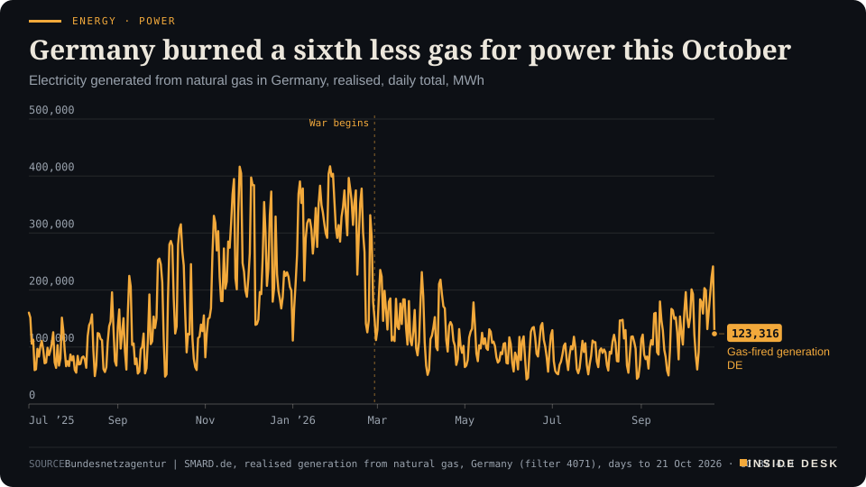
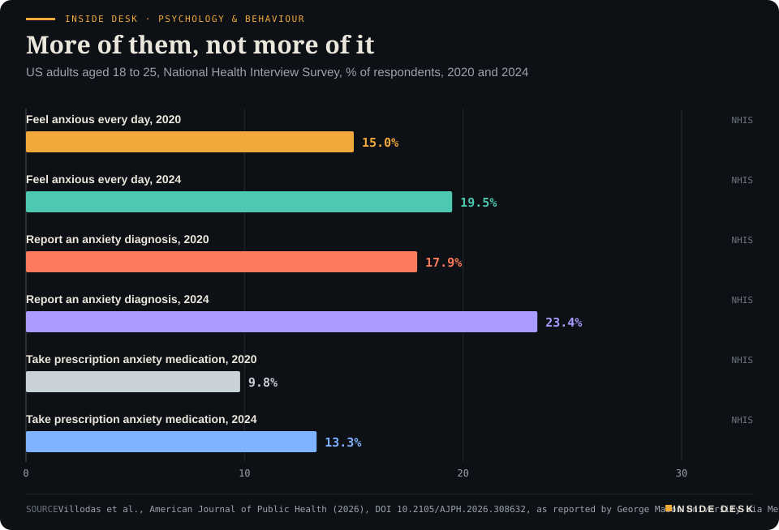
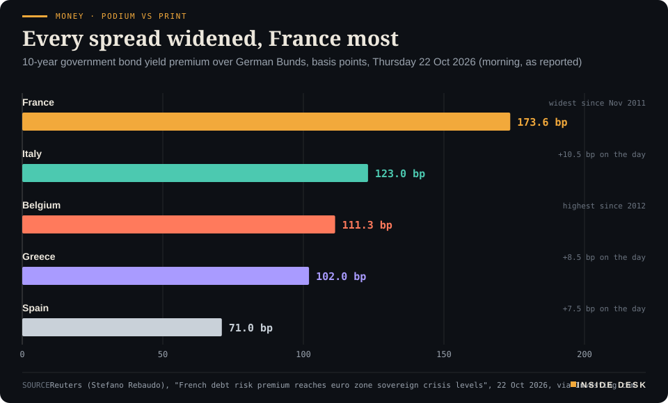
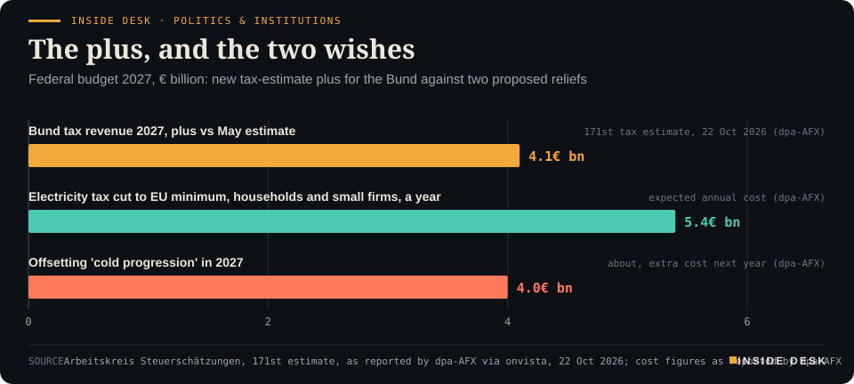
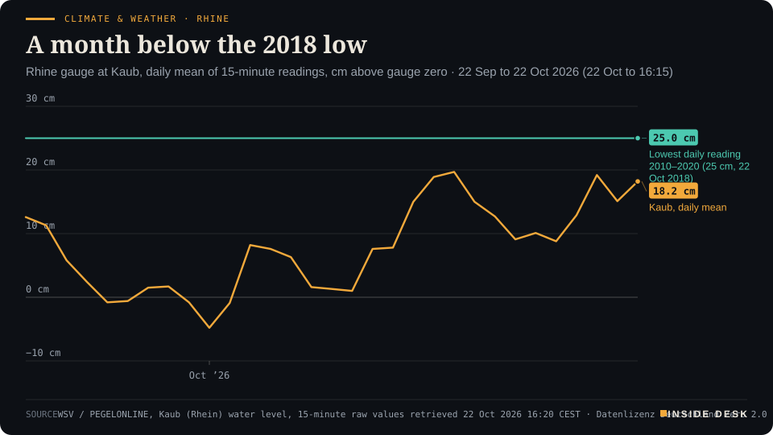

Inside Desk ePaper, Evening ePaper · Thu 22 Oct 2026
Thursday, 22 October 2026Always free
Inside Desk
Evening ePaperPublished 17:30 CEST · Berlin
Lead · Energy & Industry
Brent hit a five-month high while the Gulf's barrels kept moving. German power plants burned a sixth less gas this October, and power still cost about 80% more than a year ago.
Oil rose on what might happen, not on what did. Germany paid more for power while burning less gas, Paris paid more than Washington to borrow, and the Rhine at Kaub has spent a month below its 2018 low. Eleven desks, every number sourced.
Energy · PowerGermany burned a sixth less gas for power this OctoberElectricity generated from natural gas in Germany, realised, daily total, MWh

Line chart of daily electricity generation from natural gas in Germany since July 2025, in megawatt hours. It rises each autumn and peaks in winter, at 417,047 MWh on 27 January 2026, and falls to a low of 43,247 MWh on 13 June 2026. Over 1 to 21 October 2026 gas plants generated about 3,421 gigawatt hours, against about 4,054 for the same days of 2025, roughly 16% less. The latest value, for Wednesday 21 October 2026, is 241,431 MWh, the highest daily total since 25 February 2026.
Source: Bundesnetzagentur | SMARD.de, realised generation from natural gas, Germany (filter 4071), days to 21 Oct 2026 · CC BY 4.0 · CSV
Geo-economics · p. 6
Markets & Macro · p. 8
Climate & Weather · p. 19
The day in one sentenceOil got dearer because of what might happen rather than what did, Germany paid more for power while burning less gas, and France now pays more than the United States to borrow.
ContentsInside Desk · Evening ePaper22 October 2026
Oil rose on what might happen, not on what did. Germany paid more for power while burning less gas, Paris paid more than Washington to borrow, and the Rhine at Kaub has spent a month below its 2018 low. Eleven desks, every number sourced.
11 edition pieces · 11 desks · Published 17:30 CEST, 22 October 2026
23 ePaper extras, added , 22 October. They appear only in the ePaper and carry their own time.
17:30 Evening ePaper, updated live until 22:30 with an “Updated” time and a Latest page
Sun 10:00 The Sunday Magazine
Berlin time. Every issue is free.
How to read it
Swipe, use the arrow keys or the page strip. Tap any headline for the reading view. Press / to search, t for contents, +/− to zoom. Download the PDF.
LatestInside Desk · Evening ePaper22 October 2026
Latest
Final. Updates closed at 22:30 Berlin time.
Climate & Weather: magnitude 7.0 earthquake in northern Tibet; early casualty reports still differ
Ordinary: state premiers ask Berlin for a fuel-price cap before the lower fuel tax expires on 1 January
LeadInside Desk · Evening ePaper22 October 2026
Energy & Industry · Lead · 3 min
Brent hit a five-month high while the Gulf's barrels kept moving. German power plants burned a sixth less gas this October, and power still cost about 80% more than a year ago.
Brent crude futures rose $3.19, or 2.9%, to $112.01 a barrel by 13:11 GMT on Thursday, after touching $112.68, the highest since 18 May, Reuters reported1. The triggers were the ones you have read about all week: more Houthi strikes in Saudi Arabia, and Iran’s Revolutionary Guard saying four vessels in the northern Gulf were hit and set on fire and three more struck mines west of the Strait of Hormuz1,2. On Thursday, six people told Reuters, Saudi Aramco told staff to leave its Dhahran headquarters and work from home1.
Here is the part the headline leaves out. The barrels are moving. Kpler data show oil exports from the Persian Gulf above their pre-war levels, the Guardian reported, partly because more crude now travels overland by pipeline to the Red Sea and the Gulf of Oman2. Morgan Stanley put Middle East crude exports at about 17 million barrels a day last week1. “Reports of Middle East crude oil exports exceeding pre-conflict levels are more than countered by attacks on ships in the Strait of Hormuz and the Houthi strikes on Saudi Arabia,” said Tamas Varga of PVM Oil1.
So Thursday’s price is not a count of missing oil. It is the price of the chance that oil goes missing: insurance, rerouting, a mine field, an office tower emptied as a precaution. Nobody can invoice a probability, but everyone pays for one.
How the fear reaches you. For a household in Germany the barrel is mostly a petrol-pump and heating-oil story. The bigger bill runs through gas, and through power stations that burn it. Dutch TTF gas, Europe’s benchmark, settled at €87.43 per megawatt hour on Wednesday, up 2.78% on the day, after a rally of about 19% in October3. EU gas storage is 74.58% full, 16.0 points below the five-year average of 90.6% for the date, and has started to draw down3. Germany’s stores are 61.1% full3. The cold has arrived where the stores are thinnest: Munich 3.6°C, Berlin 5.6°C in GasRadar’s morning readings3.
The print. Now the part that sounds backwards. Germany has burned less gas for electricity this October, not more. Gas plants generated about 3,421 gigawatt hours over 1 to 21 October 2026, against about 4,054 GWh over the same days of 2025, according to the Bundesnetzagentur’s SMARD data4. Desk arithmetic: about 16% less. Solar panels made up much of the difference; their output over the same days is up by about two-fifths4. Lignite is up too4.
LeadInside Desk · Evening ePaper22 October 2026
Energy · PowerGermany burned a sixth less gas for power this OctoberElectricity generated from natural gas in Germany, realised, daily total, MWh
Line chart of daily electricity generation from natural gas in Germany since July 2025, in megawatt hours. It rises each autumn and peaks in winter, at 417,047 MWh on 27 January 2026, and falls to a low of 43,247 MWh on 13 June 2026. Over 1 to 21 October 2026 gas plants generated about 3,421 gigawatt hours, against about 4,054 for the same days of 2025, roughly 16% less. The latest value, for Wednesday 21 October 2026, is 241,431 MWh, the highest daily total since 25 February 2026.
Source: Bundesnetzagentur | SMARD.de, realised generation from natural gas, Germany (filter 4071), days to 21 Oct 2026 · CC BY 4.0 · CSV
And yet the day-ahead auction for the Germany-Luxembourg zone averaged €169.93 per megawatt hour over 1 to 21 October, against €94.14 a year earlier4. Desk arithmetic: about 80% higher, on a sixth less gas.
The reason is the dullest rule in the market. In most hours the price is set by the last plant needed to meet demand, and in Germany that is still often a gas plant. Fewer gas hours lower your exposure; they do not lower the price of the hours that remain. When the molecule costs more, so does the marginal hour, however few of those hours there are.
You can watch the rule work day by day. Wednesday 21 October was the biggest gas-burning day since 25 February, at about 241 GWh, and it was also the dearest delivery day of the week, at €211.944. Thursday cleared at €148.61, and Friday, auctioned at midday on Thursday, at €137.594. Gas burn for those days is not yet published.
What this argues for. Not panic, and not a speech. The two lines on these charts point at the same unglamorous fixes. Every gas hour replaced by a solar or wind hour is an hour the Gulf cannot price. Every interconnector lets a windy hour in the north cover a cold hour in the south. And every percentage point in a storage cavern is a cold February that does not have to be bought on the spot market. None of this makes the news like a tanker on fire. All of it decides the invoice.
The oil market will keep reacting to words and drones. PVM’s Varga expects no de-escalation before the US midterm elections1; that is a view, not a fact, and the desk records it as such. What is a fact is the arithmetic of the last three weeks: less gas burned, more paid for each megawatt hour. A country cannot control the Strait of Hormuz. It can control how many of its hours depend on it. Nothing here is advice.
Geo-economicsInside Desk · Evening ePaper22 October 2026
Geo-economics · Podium vs Print · 2 min
The US president says the Iran war will end very soon, one way or the other. By mid-afternoon on Thursday the Strait of Hormuz had seen four visible commercial crossings. Soon is a word; four is a count.
Podium
“We are going to have something one way or the other that'll happen fairly soon.”
Donald Trump, President of the United States, to reporters and at a rally in South Carolina, 21 October 2026 (Washington time), reported 22 October 2026
Print4 crossings
Four AIS-visible commercial crossings so far on 22 October, one of them a tanker; seven-day average 3.1 a day against a pre-crisis baseline of 84.8.
hormuz.now AIS counter, Strait of Hormuz traffic, Thursday 22 October 2026, 00:00 to 14:25 UTC (16:25 CEST)
The podium. Flying back from a rally in South Carolina, President Trump told reporters: “No, I think we’re not negotiating.” Then: “We are going to have something one way or the other that’ll happen fairly soon”1. At the rally itself he said: “It’ll end very soon. We could leave now, but we want to make sure it lasts for a long time”1. He added that “most people seem to think it’s after the election”1. That puts the timing after the 3 November midterms, without saying what “it” is.
The print. The waterway keeps its own minutes. By 14:25 UTC on Thursday, the hormuz.now counter had logged four AIS-visible commercial crossings of the Strait of Hormuz: three into the Gulf and one out2. One was a tanker, the 182-metre Yoko 1, bound for Iraq; the other three were a container ship and two bulk carriers2. The seven-day average is 3.1 crossings a day, against a pre-crisis baseline of 84.82. Desk arithmetic: that average is under 4% of a normal day. Wednesday’s full day closed at ten.
The noise between them. Overnight, Iranian state television said four vessels involved in oil transfers in the northern Gulf had been struck and set on fire, and three more had hit mines west of the strait3. The Associated Press could not confirm the claims, and the British monitor UKMTO had not reported them3. UKMTO does say October has had the most reported attacks on shipping since March, and it notes that some shippers are now reluctant to report incidents3. The Revolutionary Guards again threatened US bases if Washington keeps guiding ships through3.
The gap. “Fairly soon” has no date and no object. It could mean a deal or more bombing, and its own speaker says it may come after a vote1. The counter has a date, a time and a list of ships with names and flags2. Neither tells you the future. Only one of them can be checked tomorrow morning.
Verdict. The podium promises an ending. The print shows a strait running at a few per cent of normal, on a day when Iran claims seven ships were hit. If you want to know when “soon” arrives, don’t listen for an announcement. Watch for the daily count to rise for a week in a row. Nothing here is advice.
Geo-economics · Short item · ePaper extra, added
Two importers are asking the US trade court to read the statutes behind two 50% tariffs, word by word. One brings brie, the other screws. Tariffs are announced from podiums; they are undone, when they are, by filings.
A New Jersey food importer, Gellert Global Group, has sued in the US Court of International Trade over the 50% tariffs on Canadian goods1. Those tariffs were imposed under Section 338 of the Tariff Act of 1930, a Smoot-Hawley provision that no president had used for a tariff until this year1. The Liberty Justice Center, which brought the case, argues that Section 338 only allows duties to offset foreign discrimination against US commerce, and that Congress replaced it with the procedures of Section 301 in 19741. The complaint also points to the calendar. Canadian cheeses were added to the list on 8 September and duties were collected seven days later, although the statute requires a 30-day wait1. The importer wants the tariffs declared unlawful and repaid with interest, and has asked for a preliminary injunction1.
A second case is about arithmetic. Express Fasteners, an Illinois importer of screws, told the same court that the 50% Section 232 duty on steel and aluminium derivatives is “void in its entirety”2. Its argument: US Customs never issued a rule explaining how it values the metal inside such products2.
Neither filing asks whether tariffs are wise1. Both ask whether the paperwork was done. That is the narrower question, and usually the one that gets answered. Nothing here is advice.
Geo-economicsInside Desk · Evening ePaper22 October 2026
Geo-economics · Brief · ePaper extra, added
EU member states are “temporarily shelving” their demand for lower fees for European students at UK universities, the Financial Times reported on Thursday1. That demand had been part of the youth mobility talks1. The Commission asked capitals on 21 October to hold back1. “It is a gift to the UK so they can continue their good momentum,” one EU diplomat said1. A Commission proposal suggests that all three reset agreements, on youth mobility, food and plant checks, and linking carbon markets, should be closed at negotiators’ level before the 20 November summit1. Diplomats call the food-checks deal “pretty much complete”1.
Markets & MacroInside Desk · Evening ePaper22 October 2026
Markets & Macro · 2 min
On Thursday the US 10-year yield fell towards 5% while France's rose through it. Stocks fell on both sides of the Atlantic, and the bond market sorted borrowers by their budgets.
Thursday produced a small inversion of the usual order. France’s 10-year government bond yield rose 11.5 basis points to 5.11%, after touching 5.1415%, its highest since July 20021. The US 10-year Treasury yield went the other way, down more than 11 basis points to 5.032%, as investors bought bonds for safety2. Desk arithmetic: on those two snapshots, taken a few hours apart, Paris was paying about eight basis points more than Washington to borrow for ten years. Germany paid 3.38%1.
The reasons were different on each side. In the US, yields fell with stocks: the Nasdaq was down 1.4% and the S&P 500 0.7% in the morning, as chip stocks sold off again and investors weighed Meta’s and Tesla’s spending plans4. In France, the yield rose for reasons Reuters lists plainly: worries about repairing the public finances, street protests, and Paris’s difficulty passing a budget1. Investing.com adds the number behind the worry, a deficit of 5.4% of GDP3.
Equities did not like either story. The STOXX 600 was down 0.7% in the afternoon, the CAC 40 1% and Italy’s FTSE MIB 1.7%3. Brent crude rose 2.7% to $111.79 a barrel by midday after reports that the US is preparing renewed strikes on Iran and a Houthi drone attack on Saudi Aramco’s Shaybah field5. The cushions were dull ones: Nestlé rose after its organic sales beat expectations, and SAP gained 1.7% after its results3.
The constructive reading is not that France is in a crisis; Reuters quotes Citi’s Giada Giani noting a consensus that European institutions “are stronger today than they were 15 years ago”1. It is that the bond market has stopped grading France on the euro area’s curve and started grading it on its own. That is slower and more boring than a panic, and it is fixed by the same slow, boring thing: a budget that passes. Nothing here is advice.
Markets & Macro · Short item · ePaper extra, added
Profit rose 12%, equities income rose 47%, and the bank said software would let it do the same work with about 5% fewer people. The shares slipped anyway.
Barclays reported third-quarter profit before tax up 12% at £2.3 billion on Thursday, roughly in line with analysts’ estimates, and announced a new share buyback of up to £500 million1. It also said it expects to cut about 5,000 jobs, roughly 5% of its workforce, through “technology-enabled” reductions, and that artificial intelligence is beginning to deliver efficiencies1.
The cost line is where the plan shows. Barclays booked £201 million of structural cost actions in the quarter, against £93 million a year earlier, and plans about £300 million more in the fourth1. Costs rose 1% to £4.6 billion while income rose 3% to £7.4 billion, so the cost-to-income ratio improved to 62% from 63%1.
Inside the investment bank the quarter split in two: equities income rose 47%, while fixed income, currencies and commodities fell 19%1. …
Markets & Macro · Brief · ePaper extra, added
Hermès sales rose 4.3% at constant currency to €4.10 billion in the third quarter, below the 5.2% analysts expected and its weakest growth since early 2020, Reuters reports1. Leather goods rose 10.8%; ready-to-wear and accessories fell 2%, mainly on weak Chinese demand for accessories1. The shares were down nearly 8% by midday2. The finance chief called China “very difficult” but “stable”1. A slower quarter is still a growing one. Nothing here is advice.
Politics & InstitutionsInside Desk · Evening ePaper22 October 2026
Politics & Institutions · Podium vs Print · 2 min
Ten days ago the chancellor said one point of extra growth gives the room to cut the electricity tax for everyone. Today's tax estimate found the growth, and the finance ministry found no room. Both are telling the truth about different lines.
Podium
“Das ist genau das eine Prozent Wachstum, was uns diese Spielräume gibt.”
Friedrich Merz, Chancellor and CDU leader, in Berlin, 12 October 2026
Print+€4.1bn for the Bund in 2027; 'insgesamt keine Spielräume'
Tax revenue for the whole state in 2027 is €10.9bn above the May estimate, the Bund's share €4.1bn, and the ministry headlines 'no room overall in 2027'.
Federal Ministry of Finance, results of the 171st tax estimate, 22 October 2026
The podium. On 12 October Friedrich Merz announced that the electricity tax should fall “for everyone” to the European minimum, households included, using “financial room in the budget” that could appear “if growth firms up”1. His arithmetic was simple: one point of growth is worth about €10 billion in extra tax in Germany, half of it for the federal government. “Das ist genau das eine Prozent Wachstum, was uns diese Spielräume gibt”, he said: that is exactly the one per cent that gives us this room1.
The print. On Thursday the tax estimators delivered the growth part. The government’s autumn projection now has 1.3% for this year and 1.1% for next, up from 0.5% and 0.9%3. Revenue for all levels of government in 2027 is €10.9 billion above the May estimate; for the years to 2030 the plus is €43.4 billion3. The federal share for 2027 is €4.1 billion3. Then the ministry’s own headline: “insgesamt keine Spielräume in 2027”, no room overall2. Lars Klingbeil put it this way: “we gain no new room, but we do not have to close new gaps either”2. The extra money flows mainly to the Länder and municipalities; at federal level, some years come in below May2.
Politics & Institutions · Short item · ePaper extra, added
Parliament wants €1.17 billion more than the Commission for 2027. Talks start on 3 November.
On Wednesday, a day before Berlin’s tax estimate, the European Parliament did its own budget arithmetic. It set commitments for the EU’s 2027 budget, the legal promises to pay, at €194 billion, and payments actually made at €203.3 billion1. That is €1.17 billion more in commitments than the Commission proposed1.
Politics & InstitutionsInside Desk · Evening ePaper22 October 2026
On Thursday the Court of Justice in Luxembourg upheld the Commission’s cases against Hungary and the Czech Republic “in their entirety”1. Hungarian law let police question a suspect without a lawyer if the lawyer had not arrived two hours after being told of the custody; Czech law set 48 hours, or none if the lawyer could not be reached1. The court said the right to a lawyer means, in principle, a lawyer physically present, and the EU directive lists the only exceptions exhaustively1. Hungary must also write proper rules for waiving the right1. Both states must comply without delay1. A clock is not a ground for exception.
Psychology & BehaviourInside Desk · Evening ePaper22 October 2026
Psychology & Behaviour · 2 min
A US survey study finds daily anxiety among 18- to 25-year-olds rose from 15% to 19.5% between 2020 and 2024, while its reported intensity did not. The rise is in how many, and in who gets a name for it.
A study published in the American Journal of Public Health looked at nearly 11,000 Americans aged 18 to 25 who answered the National Health Interview Survey between 2020 and 20241. Its headline is plain: nearly one in five said they felt anxious every day in 2024, up from 15% in 20201.
The three lines. The rise shows up everywhere you would look for it. Daily anxiety went from 15% to 19.5%; a reported anxiety diagnosis from 17.9% to 23.4%; prescription anxiety medication from 9.8% to 13.3%1. Desk arithmetic: each moved by roughly 30-36% in four years.
Inside Desk · Psychology & BehaviourMore of them, not more of itUS adults aged 18 to 25, National Health Interview Survey, % of respondents, 2020 and 2024

Bar chart: among US adults aged 18 to 25, daily anxiety rose from 15% in 2020 to 19.5% in 2024, reported anxiety diagnoses from 17.9% to 23.4%, and prescription anxiety medication use from 9.8% to 13.3%.
Source: Villodas et al., American Journal of Public Health (2026), DOI 10.2105/AJPH.2026.308632, as reported by George Mason University via Medical Xpress, 22 Oct 2026 · CSV
The line that did not move. The intensity respondents reported “didn’t change significantly overall”1. That is the quiet finding. More young adults are anxious every day, but the typical anxious young adult does not describe it as worse than in 2020. A society can respond to “more people” with capacity, and to “worse” with urgency; this survey points at the first.
Psychology & Behaviour · Short item · ePaper extra, added
In a small brain-scan study, six-year-olds talking to ChatGPT used their control networks less than adults did. The authors are careful about what that does not show.
Researchers at the Technion in Israel put 15 first graders, average age 6.4, and 16 adults into an fMRI scanner for a five-minute spoken conversation with ChatGPT about opening a shop1. The study is published in Cerebral Cortex1.
On a creativity test outside the scanner, both groups scored alike for their age1. Inside, adults showed stronger synchronisation in the frontoparietal control network, 0.201 against 0.113, and stronger links between that network and the attention network, 0.126 against 0.0391. Only in adults did higher creativity go with stronger coordination between control and salience networks1. The default mode network, central to most models of creativity, did not differ1.
A George Mason University study of 221 young adults aged 18 to 21, in the Journal of Child & Adolescent Substance Use, sorted adverse childhood experiences into three patterns rather than one score1. Participants reported 2.7 adversities on average; about 23% reported none1. Those whose pattern centred on emotional abuse reported more hopelessness; those exposed to many kinds of adversity reported stronger cravings for alcohol or drugs when upset, but not when happy1. The study measured risk factors, not substance use itself, and the authors ask for larger, longer studies1. Two people with the same total can need different help.
Energy & IndustryInside Desk · Evening ePaper22 October 2026
Energy & Industry · Short item · ePaper extra, added
MEPs voted to give oil, gas and coal importers three more years to prove their fuel is measured like Europe's own, two more than the Commission asked for. Sanctioned suppliers get no extra time.
The European Parliament voted on Thursday, by 341 to 225 with 6 abstentions, to delay the import rules of the EU Methane Regulation by three years1. The Commission had proposed one1.
Under Parliament’s text, importers of crude oil, gas and coal would have until 31 May 2031, instead of 2029, to show that contracts signed or renewed since 4 August 2024 cover only fuel monitored, reported and verified to standards equivalent to the EU’s1. The first reports on the methane intensity of fuel sold in the EU would move from 5 August 2029 to 5 August 20311. Importers had warned they might not find enough compliant supply while markets are strained by the conflict in the Middle East, the press release says1. Reuters notes the vote followed pressure from governments including France and the US2.
Two clauses are worth more than the headline. The longer timeline does not apply to oil, gas and coal from countries under EU import sanctions, and those volumes, including in mixed cargoes, must be reported separately1. And the Commission must report by 1 July 2029 on implementation and supply security1.
It is not law yet: Parliament now negotiates with the Council1. A deadline moved is not a rule dropped. The measuring still has to be done; it now has a later invoice date.
Energy & Industry · Brief · ePaper extra, added
Libya’s National Oil Corporation said on Thursday that individuals entered the crude receiving station near the Zawiya refinery and closed the valve on the line from the Hamada and Tahara fields, cutting output at both1. The NOC urged the authorities “to intervene immediately to reopen the valve and secure the site”1. Hamada normally produces 50,000 barrels a day of crude; Libya’s total is about 1.4 million1. Desk arithmetic: Hamada alone is under 4% of that. In September an armed group shut a valve on the Sharara line in the same way1. Supply security is sometimes a navy, and sometimes a guard at a gate.
Money, FX & CommitteesInside Desk · Evening ePaper22 October 2026
Money, FX & Committees · Podium vs Print · 2 min
Six days ago the Banque de France governor said the conditions for ECB help were not met. On Thursday France paid 173.58 basis points over Germany, and every other spread widened with it. He may still be right; the test he set is the one to watch.
Podium
“…today, those conditions are not met. We are not seeing financial fragmentation in the euro area.”
Emmanuel Moulin, Governor of the Banque de France and ECB Governing Council member, to AFP, 16 October 2026
Print173.58 bp
France's 10-year premium over German Bunds, its widest since November 2011; the French 10-year yield rose 11.5 bp to 5.11%, after touching 5.1415%, its highest since July 2002.
Euro area government bond market, as reported by Reuters, 22 October 2026, morning
The podium. On 16 October Emmanuel Moulin, governor of the Banque de France, told AFP that the ECB has instruments “when disorderly and unjustified market movements can disrupt the transmission of monetary policy”, but that “today, those conditions are not met. We are not seeing financial fragmentation in the euro area”1. He blamed the rise in French borrowing costs mainly on “uncertainties over the budget vote”, said banks and insurers could cope, and prescribed “fiscal consolidation” rather than central bank action1.
The print. On Thursday morning France’s 10-year yield rose 11.5 basis points to 5.11%, after touching 5.1415%, its highest since July 20022. The premium over German Bunds reached 173.58 basis points, the widest since November 2011, in the euro debt crisis2. German 10-year yields fell 4 basis points to 3.38% on safe-haven buying2. And France was not alone:
Money · Podium vs PrintEvery spread widened, France most10-year government bond yield premium over German Bunds, basis points, Thursday 22 Oct 2026 (morning, as reported)

Bar chart of 10-year bond spreads over German Bunds on the morning of 22 October 2026, as reported by Reuters: France 173.58 basis points, its widest since November 2011; Italy 123; Belgium 111.28, its highest since 2012; Greece 102; Spain 71. All five widened on the day.
Source: Reuters (Stefano Rebaudo), "French debt risk premium reaches euro zone sovereign crisis levels", 22 Oct 2026, via Investing.com · CSV
Belgium’s spread widened more than 10 basis points to 111.28, its highest since 2012; Italy’s rose 10.5 to 123, Greece’s 8.5 to 102 and Spain’s 7.5 to 712. …
Money, FX & Committees · Short item · ePaper extra, added
Employers are still not firing. They are also barely hiring, and the Fed meets next week with both facts on the table.
Initial claims for US unemployment benefits fell to a seasonally adjusted 194,000 in the week to 17 October, the Labor Department reported on Thursday1. Economists polled by Dow Jones had expected 200,0002. The low for the year, 189,000 in the week of 18 July, was the lowest since the late 1960s; claims have averaged 212,000 over the past year, and the four-week average is now 197,7501.
That is one half of what CNBC calls a “low-hire, low-fire” labour market1. …
Money, FX & CommitteesInside Desk · Evening ePaper22 October 2026
Money, FX & Committees · Brief · ePaper extra, added
Norway’s Government Pension Fund Global returned -0.5% in the third quarter, an accounting loss of 278 billion kroner, its manager said on Thursday1. Fixed income lost 3.5% “as rising interest rates led to weaker results”, while equities returned 0.5% and renewable energy infrastructure 7.5%1. A stronger krone cut the fund’s value by a further 472 billion kroner; it stood at 22,014 billion kroner on 30 September1. Higher rates mark bonds down first and pay coupons later. Nothing here is advice.
Ordinary & Inherited LifeInside Desk · Evening ePaper22 October 2026
Ordinary & Inherited Life · 2 min
The Deutschlandticket goes to €66.80 a month in January. A pay-per-ride version for occasional travellers was taken off the transport ministers' agenda without debate. And the Länder say €14 billion more is needed just to keep today's trains running.
The transport ministers of the Länder and the federal government closed their autumn conference in Hohenschwangau, in Bavaria, on Thursday2. For your wallet, three lines matter.
The price. From January the Deutschlandticket costs €66.80 a month instead of €631. Desk arithmetic: €3.80 more a month, or 6.0%; €45.60 more over a year, which brings twelve months to €801.60.
The version that did not come. North Rhine-Westphalia and Hamburg wanted a working group on a nationwide “Deutschlandticket light” for occasional travellers: you tap in and out on your phone, and at the end of the month you pay the cheapest fare for the rides you took, capped at the Deutschlandticket price1. NRW already runs such a system, eezy.nrw1. On Wednesday a majority took the motion off the agenda, saying it had been submitted too late1. Bavaria’s minister, Christian Bernreiter, had said beforehand there was no money for it, and the transport operators’ association also opposed it1. NRW’s minister, Oliver Krischer, called it a missed chance and wants it on the next agenda2,3: “Wer nur gelegentlich Bus und Bahn fährt, muss genauso unkompliziert und zu fairen Konditionen unterwegs sein können wie die Vielfahrer”2.
The money behind the trains. The ministers’ resolution asks the federal government to compensate “vollständig”, in full, the extra costs from higher track-access charges that follow an EU Court of Justice ruling and a Cologne administrative court ruling4. And it says that keeping today’s regional rail service alone needs €14 billion more in regionalisation funds by 20314. Bernreiter’s warning is plain: without it, “höhere Ticketpreise und Abbestellung von Verkehren”, higher fares and cancelled services5. Federal transport minister Steffen Bilger came, in dpa’s words, without fresh money5.
The constructive reading. Demand is not the problem: Bavaria says regional rail use in 2024 was 23.8% above 20195. The problem is the invoice for the track, and that is a solvable kind of problem, settled in a budget line rather than a slogan. …
Ordinary & Inherited Life · Short item · ePaper extra, added
Super E10 fell 4.1 cents in a week while Brent rose. Diesel went the other way, pulled by heating oil.
The motoring club ADAC’s weekly comparison, published on Wednesday afternoon, has Super E10 at a national average of €2.110 a litre, 4.1 cents less than a week earlier1. Diesel rose 0.8 cents to €2.2551.
The oil price went the other way. Brent closed on Tuesday at about $109 a barrel, roughly three dollars more than a week before and the highest level since May1. So why is petrol cheaper? ADAC’s reading is that E10 had room to fall, and that most of the fuel-tax cut now seems to reach the pump for petrol1. …
Ordinary & Inherited Life · Short item · ePaper extra, added
On Thursday evening the state premiers asked Berlin for a fuel-price cap. The word to keep is not the cap. It is 1 January, when the lower fuel tax runs out.
Germany’s state premiers, at their conference in Berlin on Thursday, asked the federal government to put forward a proposal for capping fuel prices, Deutschlandfunk reported at 17:461. Lower Saxony’s premier, Lies of the SPD, said the instrument should give people the assurance that they are not paying for higher company profits at the pump, and that Berlin now has to settle how things go on after 1 January1.
That date is the dull part, and the important one. At the turn of the year the lower tax rate currently applied to petrol and diesel expires1. …
Tech & ComputeInside Desk · Evening ePaper22 October 2026
Tech & Compute · 2 min
Texas Instruments grew revenue 28% and spent less than half as much on plant as a year ago. Free cash flow more than tripled. Some of it was a government cheque, and the release says so.
Texas Instruments reported third-quarter revenue of $6.06bn on Wednesday evening, up 28% on a year ago and 11% on the quarter, with net income of $2.43bn1. Chief executive Haviv Ilan credited “continued broad growth in industrial, automotive and data center”1. Analog chips, the unglamorous parts that manage power in everything from cars to servers, grew 32% to $4.91bn2. Both revenue and earnings per share of $2.62 came in above the analyst figures the Wall Street Journal compiled, Quartz reported2.
The dull line. The interesting number is not in the headline. Capital expenditure in the quarter was $463m, against $1.20bn a year earlier; over twelve months it fell to $2.58bn from $4.82bn1. For years TI poured money into 300mm wafer plants. Now the plants are running, and the release says the “benefit of 300mm production” shows up in cash1. Twelve-month cash flow from operations rose 43% to $9.90bn, and free cash flow to $8.42bn from $2.42bn1.
The footnote. Read the definition. TI’s free cash flow is operating cash minus capex plus proceeds from US CHIPS Act incentives, which came to $1.10bn over the twelve months1. A further $469m of CHIPS tax credit sits inside operating cash1. Desk arithmetic: the two together are about 19% of the $8.42bn. TI does not hide this; it prints it in a reconciliation table. That is how a subsidy should look: visible, counted and separable from the business.
The constructive reading. The stockroom is getting leaner, not fatter: finished goods fell to $1.69bn from $1.94bn a year ago, while sales rose1. TI guides to $5.80bn–$6.30bn for the fourth quarter1. In a week when investors are asking whether AI spending will ever pay, here is a chipmaker past its spending phase showing what payback looks like: a lower capex line and a fatter cash line.
Nothing here is advice; it is a reading of a company’s own accounts.
Tech & Compute · Short item · ePaper extra, added
The KOSPI fell 3.5% a day after rising more than 3%. A share buyback ended, and so did one source of buyers.
South Korea’s benchmark KOSPI fell 201.8 points, or 3.52%, to 5,533.77 on Thursday, a day after rebounding more than 3%1. Samsung Electronics closed 4.03% lower at 214,500 won and SK hynix 5.49% lower at 1.22 million won1. Samsung Electro-Mechanics opened higher on news of its Nvidia substrate deal and still closed 1.97% down1.
The explanation offered was not about chips at all. “Although Meta and Tesla reported earnings that exceeded market expectations, their results failed to ease concerns over profitability amid massive AI investments,” said Lee Kyoung-min of Daishin Securities1. He added that the end of SK hynix’s share buyback “reduced a source of support for market demand”1.
Read the plumbing. Trading was light, at 201.17 million shares, and decliners outnumbered advancers 706 to 1741. Institutions sold a net 46.3 billion won while foreigners and individuals were small net buyers1. Desk arithmetic: on 13.7 trillion won of turnover, the institutions’ net sale was about 0.3%. A thin day with one buyer gone can move an index a long way without anyone changing their mind about memory chips. The won, for its part, firmed slightly, to 1,324.2 per dollar1.
Nothing here is advice.
Tech & Compute · Brief · ePaper extra, added
Nvidia said on Wednesday that Samsung Electro-Mechanics will join its package-substrate supply chain, first from existing Korean lines and later from upgraded and new plants in Sejong and Busan1. With Japan’s Ibiden and Taiwan’s Unimicron, Nvidia aims to raise substrate capacity for its products 2.5 times over three years1. Separately, it and Amkor plan to lift interposer-wafer capacity in Korea by more than 300% by the end of 20281. Unlike a speech, a supply contract names factories.
Health & CareInside Desk · Evening ePaper22 October 2026
Health & Care · 2 min
Congo passed 9,700 confirmed cases. The WHO's Africa office says about six in ten recent deaths happened outside treatment centres. That is a statistic about distance and trust, and it can be worked on.
The World Health Organization’s Africa office said on Thursday that the Bundibugyo Ebola outbreak has become a regional public health concern1. “Ebola does not wait. It follows movement, exploits gaps, and tests the strength of our health systems,” regional director Mohamed Yakub Janabi told an online briefing1. “Today, the test is no longer confined to one place.”1
The count. Congo’s health authorities reported 9,704 confirmed cases and 4,687 deaths as of 20 October, a case fatality rate of 48.3%1. The WHO’s weekly report, with data to 19 October, had 9,637 cases and 4,646 deaths2. Desk arithmetic: 67 more confirmed cases and 41 more deaths in one reporting day. The outbreak now covers eight of Congo’s 26 provinces, and 50 of the 66 health zones ever affected reported a new case in the last 21 days1,2. The WHO says its seven-day moving average shows “a modest upward trend”2.
The line that matters. Janabi said about six in every ten recent deaths in Congo occurred outside treatment centres1. That is not a medical fact so much as a logistical one. It means people fall ill and die at home or in ordinary clinics, where nobody can isolate them and where their care exposes relatives and staff.
Beyond Congo. Kenya has nine cases, including one death, and Nigeria one imported case1. The WHO report cites insecurity, displacement and restricted humanitarian access as threats to surveillance2. The Africa CDC will convene health ministers virtually on 28 October1,2.
The constructive reading. The figures are bad, but they are published, daily and by province, which is the precondition for any response. Ministers have a date in the diary, and the WHO has named the specific gap: getting sick people into a bed that is built for this. That is a problem of ambulances, trust and rosters. It is solvable, and it is now on the table in plain numbers.
Nothing here is a reason for readers in Europe to change plans; the figures describe a response, not a risk to you.
Health & Care · Short item · ePaper extra, added
Nine cases, eight in treatment, more than 120 people in quarantine, and a request for vaccine for frontline workers against a strain with no licensed vaccine.
Kenya’s director-general for health, Patrick Amoth, gave the country’s numbers at the WHO Africa briefing on Thursday: nine Ebola cases, one death, eight patients in treatment and more than 120 people in quarantine1. AFP counts the nine cases since 6 October2.
The request is the interesting part. Kenya has asked the WHO and the Africa CDC for 10,000 vaccine doses to protect frontline health workers1. The outbreak is caused by the Bundibugyo strain, for which, AFP reports, there is still neither a vaccine nor a specific treatment2. The briefing account does not say which product Kenya has in mind1. Read it as a request to be first in line, should a candidate be made available, for the people most exposed: nurses, cleaners, ambulance crews.
Desk arithmetic: more than 120 people in quarantine for nine cases is about 13 per case. …
Health & Care · Brief · ePaper extra, added
Nigeria’s first Ebola case of this outbreak is the Bundibugyo strain that is driving Congo’s epidemic, officials said1. “We did three levels of tests, but all molecular. The strain was Bundibugyo,” said Olajumoke Babatunde of the Nigeria Centre for Disease Control’s laboratory service1. The WHO confirmed the result1. The patient, a diplomat, travelled from Uganda to Abuja on 3 October; 44 contacts are being monitored, and infection control is being “ramped up” at the private hospital where she sought care1. In 2014 Nigeria held its outbreak to 19 infections1. A laboratory that answers clearly is the first line of that record.
Security & OrderInside Desk · Evening ePaper22 October 2026
Security & Order · 2 min
After his security council, the president said the general recommendation was no demonstrations at all. By two o'clock a Paris judge had suspended a police ban, and the march set off from a hospital gate. That is how a rule of law is supposed to work under pressure.
This morning’s note said the useful document would be whatever the security council admitted had gone wrong. The Elysée published its readout on Thursday. It is short. It says the council reviewed intelligence, anticipation and security for the coming weeks, “while going back over the dysfunctions” behind last weekend’s events1. It does not list them. The admission is now on paper; the inventory is not yet.
The rule for Saturday. Speaking afterwards, President Macron set the line. “The general recommendation is that there should be no demonstrations,” he said. Unions that still want to march will get “alternative routes proposed by the prefects”; protests by others will be banned “wherever possible”2. He blamed “seditious” ultra-left groups as well as vandals for last Saturday’s riots3. A defence council follows on Friday, “and we will take further decisions,” he said3. Lyon has banned every demonstration on Saturday by decree; Toulon, central Rouen and Grenoble have announced similar bans2.
The machinery. For the interior ministry, Jean-Didier Berger said on BFMTV that Saturday’s deployment will be 20% larger than on 17 October, when about 60,000 police and gendarmes were out3. Desk arithmetic: that is roughly 72,000. Justice minister Gérald Darmanin said 2,500 people have been arrested since the weekend; 174 have been locked up and more than 900 are being prosecuted3. Trials are already under way3.
The check. At 14:25 France 24 reported that an administrative court had suspended a Paris police order banning a student march planned for 2pm by Interfac Île-de-France3. The judge gave no reasons in what was reported3. By 14:53 it reported that the march had set off from the Pitié-Salpêtrière hospital in the 13th arrondissement3.
For you. Don’t read that ruling as a defeat for order. It shows the order working. A ban is an administrative act, and administrative acts can be challenged the same day, by people with a lawyer and a filing. If you plan to be in a French city on Saturday, check your prefecture’s own orders, which differ from city to city2. In Paris, follow what the court allowed, not just what the presidency recommended.
Security & Order · Short item · ePaper extra, added
A day after Washington ordered its non-emergency staff out of Saudi Arabia, the kingdom's oil company told headquarters staff to work remotely where they can. Drones were intercepted over Riyadh and Medina.
Saudi Aramco has ordered the evacuation of its headquarters in Dhahran and told employees to work remotely where possible, six people with knowledge of the matter told Reuters on Thursday1. Aramco did not comment; the headquarters has been damaged in recent attacks1.
On the same day, the Saudi-led coalition said it had intercepted drones over Riyadh and over the holy city of Medina1. …
Security & Order · Brief · ePaper extra, added
Paris city hall has urged residents to take “extreme caution” during Saturday’s protests1. Its advice is practical: bring rubbish bins, bicycles and outdoor furniture inside “from midday Saturday”1. The city has started clearing public spaces of barriers and movable building-site equipment. It is emptying street litter bins and removing glass recycling containers, and more municipal staff will be on duty over the weekend1. About 450 businesses in Paris were damaged last weekend, roughly half of them looted1. Prevention rarely makes the news, which is partly why it works.
Climate & WeatherInside Desk · Evening ePaper22 October 2026
Climate & Weather · 2 min
Eight years ago today the Rhine at Kaub set the low of its reference decade, 25 cm. Every daily mean of the past 31 days has been below it. The storms are coming to the west, not to the Rhine.
The lowest daily water level the Rhine gauge at Kaub recorded in its 2010–2020 reference period was 25 cm, on 22 October 20182. That was eight years ago today. At 16:15 this afternoon the gauge read 17 cm1,2.
Climate & Weather · Short item · ePaper extra, added
By Thursday afternoon Météo-France had raised orange wind warnings from Finistère to the Nord.
Météo-France put Finistère, Morbihan and the Côtes-d’Armor on orange alert for wind from 22:00 on Thursday, as Storm Austen crosses the Channel overnight1. On Friday twelve more départements join them: all of Normandy, Ille-et-Vilaine, Loire-Atlantique, the Nord, Pas-de-Calais, the Somme, the Yvelines and the Val-d’Oise1. That makes 151.
The forecaster expects gusts of 100–110 km/h inland, locally 120 km/h, and up to 130–140 km/h on the coast1,2. “Le département de la Manche sera particulièrement concerné,” it added1. Austen is the first storm of the autumn to reach France, and heavy rain is expected on Friday over Brittany and Normandy2.
Météo-France makes one point that is easy to miss: the trees still carry much of their foliage, which makes them more likely to fall in strong wind2. Its advice for an orange wind warning is plain: secure what the wind can take, limit journeys, stay off roofs, and run any generator outside the house2.
Climate & Weather · Short item · ePaper extra, added
A magnitude 7.0 earthquake struck northern Tibet at 16:33 Berlin time. The first hours bring numbers that disagree, and that is normal.
A magnitude 7.0 earthquake struck Baqen county in Nagqu, northern Tibet, at 22:33 local time on Thursday, which was 16:33 in Berlin2,3. The US Geological Survey puts the epicentre about 191 km east-north-east of Nagqu and has issued an orange alert on its loss model1. China’s earthquake centre called it the strongest to hit the country since January 20242.
The place matters as much as the size. The epicentre lies in a sparsely populated county where the ground within 5 km averages about 4,864 metres above sea level, some 400 km from Lhasa2. In the township nearest the epicentre, Xinhua reported cracked walls in the government office and collapsed houses; power was cut and phone signals were weak in the county seat3.
The early counts do not yet agree. Reuters, citing the state broadcaster, reported at least two people injured in a village near the epicentre2; Xinhua’s report, filed at 00:36 Beijing time, said no casualties had yet been reported and that villages were still being checked3. …
Climate & Weather · Brief · ePaper extra, added
The Met Office named Storm Boelo on Thursday, to follow Storm Austen with wind and rain across the whole of the UK on Saturday1. Austen’s amber warning covers Cornwall, Scilly, Plymouth and parts of Devon from 01:00 to 10:00 on Friday, with gusts of 60–70 mph1. The Government of Jersey has told all schools to close on Friday1. The BBC notes that storms often come in clusters, and that in about half the years since 2015 the first named storm arrived after 1 November1. This year it came early, and so did the warnings.
Charts and dataInside Desk · Evening ePaper22 October 2026
Charts and data
Energy · PowerGermany burned a sixth less gas for power this OctoberElectricity generated from natural gas in Germany, realised, daily total, MWh
Line chart of daily electricity generation from natural gas in Germany since July 2025, in megawatt hours. It rises each autumn and peaks in winter, at 417,047 MWh on 27 January 2026, and falls to a low of 43,247 MWh on 13 June 2026. Over 1 to 21 October 2026 gas plants generated about 3,421 gigawatt hours, against about 4,054 for the same days of 2025, roughly 16% less. The latest value, for Wednesday 21 October 2026, is 241,431 MWh, the highest daily total since 25 February 2026.
Source: Bundesnetzagentur | SMARD.de, realised generation from natural gas, Germany (filter 4071), days to 21 Oct 2026 · CC BY 4.0 · CSV
Energy · PowerA windy Thursday cleared 30% below Wednesday, in a dear OctoberGermany/Luxembourg day-ahead electricity price, daily average, € per MWh
Line chart of the daily average German-Luxembourg day-ahead electricity price since July 2025, in euros per megawatt hour. Monthly averages stay between about €77 and €110 through July 2026, including the months after the war begins at the end of February; the daily low is −€16.34 on 5 April. The price climbs from August, averaging €144.82 in September with a daily high of €256.55 on 14 September, and €168.96 over 1 to 22 October, against €95.54 over the same days of 2025. The latest value, for delivery on Thursday 22 October 2026, is €148.61, down from €211.94 for Wednesday 21 October.
Source: Bundesnetzagentur | SMARD.de, day-ahead price DE-LU (filter 4169), delivery days to 22 Oct 2026 · CC BY 4.0 · CSV
Latest values
Series
Value
Date
Chart
Gas-fired generation DE
123,316
22 Oct 2026
Germany burned a sixth less gas for power this October
Day-ahead DE-LU
137.59
23 Oct 2026
A windy Thursday cleared 30% below Wednesday, in a dear October
Last data point of each series in the charts above, from the Inside Desk data archive. Sources under each chart.
Back pageInside Desk · Evening ePaper22 October 2026
Before you close the tab
The day in one sentence
Oil got dearer because of what might happen rather than what did, Germany paid more for power while burning less gas, and France now pays more than the United States to borrow.
One thing you can do this week
This weekend, write down one reading from your own home: the gas or electricity meter, or the level in the oil tank. Do it again next weekend. Tonight's edition is full of gauges, from the Rhine at Kaub to the spread on French bonds, and the one in your hallway is the only one that tells you about your own winter.
A habit, not advice. Nothing here tells you what to buy, sign or switch.
What went right
Employers in the United States are still not letting people go. Initial claims for unemployment benefits fell to 194,000 in the week to 17 October, against 200,000 expected, close to the lowest levels since the late 1960s 1. In a week of oil spikes and bond nerves, the dullest form in the system said the job you have is fairly safe.
In euros at home
Heating oil cost €172.72 per 100 litres on Thursday's German average, 0.38% less than on Wednesday, €2.34 more than a week ago and €39.50 more than three months ago 2. Desk arithmetic: a 3,000-litre delivery costs about €5,182 today, some €1,185 more than the same order three months ago.
Desk arithmetic on the cited average price. Local prices differ by region, quantity and supplier. Nothing here is advice.
Small words
Spread
The extra interest one government pays over another to borrow for the same length of time, here measured against Germany. On Thursday France paid 173.58 basis points (1.7358 percentage points) more than Germany for ten-year money, the widest gap since November 2011 3. A basis point is a hundredth of a percentage point.
Commentary for information only. Not investment, legal, tax, medical or political advice. Inside Desk is free and reader-supported. Every number is sourced in the piece it appears in.
This issue has been updated.
All articles in this edition
Energy & Industry · 3 min read
Germany burned less gas for power and paid more for it
Brent hit a five-month high while the Gulf's barrels kept moving. German power plants burned a sixth less gas this October, and power still cost about 80% more than a year ago.
Brent crude futures rose $3.19, or 2.9%, to $112.01 a barrel by 13:11 GMT on Thursday, after touching $112.68, the highest since 18 May, Reuters reported1. The triggers were the ones you have read about all week: more Houthi strikes in Saudi Arabia, and Iran’s Revolutionary Guard saying four vessels in the northern Gulf were hit and set on fire and three more struck mines west of the Strait of Hormuz1,2. On Thursday, six people told Reuters, Saudi Aramco told staff to leave its Dhahran headquarters and work from home1.
Here is the part the headline leaves out. The barrels are moving. Kpler data show oil exports from the Persian Gulf above their pre-war levels, the Guardian reported, partly because more crude now travels overland by pipeline to the Red Sea and the Gulf of Oman2. Morgan Stanley put Middle East crude exports at about 17 million barrels a day last week1. “Reports of Middle East crude oil exports exceeding pre-conflict levels are more than countered by attacks on ships in the Strait of Hormuz and the Houthi strikes on Saudi Arabia,” said Tamas Varga of PVM Oil1.
So Thursday’s price is not a count of missing oil. It is the price of the chance that oil goes missing: insurance, rerouting, a mine field, an office tower emptied as a precaution. Nobody can invoice a probability, but everyone pays for one.
How the fear reaches you. For a household in Germany the barrel is mostly a petrol-pump and heating-oil story. The bigger bill runs through gas, and through power stations that burn it. Dutch TTF gas, Europe’s benchmark, settled at €87.43 per megawatt hour on Wednesday, up 2.78% on the day, after a rally of about 19% in October3. EU gas storage is 74.58% full, 16.0 points below the five-year average of 90.6% for the date, and has started to draw down3. Germany’s stores are 61.1% full3. The cold has arrived where the stores are thinnest: Munich 3.6°C, Berlin 5.6°C in GasRadar’s morning readings3.
The print. Now the part that sounds backwards. Germany has burned less gas for electricity this October, not more. Gas plants generated about 3,421 gigawatt hours over 1 to 21 October 2026, against about 4,054 GWh over the same days of 2025, according to the Bundesnetzagentur’s SMARD data4. Desk arithmetic: about 16% less. Solar panels made up much of the difference; their output over the same days is up by about two-fifths4. Lignite is up too4.
Energy · PowerGermany burned a sixth less gas for power this OctoberElectricity generated from natural gas in Germany, realised, daily total, MWh
Line chart of daily electricity generation from natural gas in Germany since July 2025, in megawatt hours. It rises each autumn and peaks in winter, at 417,047 MWh on 27 January 2026, and falls to a low of 43,247 MWh on 13 June 2026. Over 1 to 21 October 2026 gas plants generated about 3,421 gigawatt hours, against about 4,054 for the same days of 2025, roughly 16% less. The latest value, for Wednesday 21 October 2026, is 241,431 MWh, the highest daily total since 25 February 2026.
Source: Bundesnetzagentur | SMARD.de, realised generation from natural gas, Germany (filter 4071), days to 21 Oct 2026 · CC BY 4.0 · CSV
And yet the day-ahead auction for the Germany-Luxembourg zone averaged €169.93 per megawatt hour over 1 to 21 October, against €94.14 a year earlier4. Desk arithmetic: about 80% higher, on a sixth less gas.
The reason is the dullest rule in the market. In most hours the price is set by the last plant needed to meet demand, and in Germany that is still often a gas plant. Fewer gas hours lower your exposure; they do not lower the price of the hours that remain. When the molecule costs more, so does the marginal hour, however few of those hours there are.
You can watch the rule work day by day. Wednesday 21 October was the biggest gas-burning day since 25 February, at about 241 GWh, and it was also the dearest delivery day of the week, at €211.944. Thursday cleared at €148.61, and Friday, auctioned at midday on Thursday, at €137.594. Gas burn for those days is not yet published.
Energy · PowerA windy Thursday cleared 30% below Wednesday, in a dear OctoberGermany/Luxembourg day-ahead electricity price, daily average, € per MWh
Line chart of the daily average German-Luxembourg day-ahead electricity price since July 2025, in euros per megawatt hour. Monthly averages stay between about €77 and €110 through July 2026, including the months after the war begins at the end of February; the daily low is −€16.34 on 5 April. The price climbs from August, averaging €144.82 in September with a daily high of €256.55 on 14 September, and €168.96 over 1 to 22 October, against €95.54 over the same days of 2025. The latest value, for delivery on Thursday 22 October 2026, is €148.61, down from €211.94 for Wednesday 21 October.
Source: Bundesnetzagentur | SMARD.de, day-ahead price DE-LU (filter 4169), delivery days to 22 Oct 2026 · CC BY 4.0 · CSV
What this argues for. Not panic, and not a speech. The two lines on these charts point at the same unglamorous fixes. Every gas hour replaced by a solar or wind hour is an hour the Gulf cannot price. Every interconnector lets a windy hour in the north cover a cold hour in the south. And every percentage point in a storage cavern is a cold February that does not have to be bought on the spot market. None of this makes the news like a tanker on fire. All of it decides the invoice.
The oil market will keep reacting to words and drones. PVM’s Varga expects no de-escalation before the US midterm elections1; that is a view, not a fact, and the desk records it as such. What is a fact is the arithmetic of the last three weeks: less gas burned, more paid for each megawatt hour. A country cannot control the Strait of Hormuz. It can control how many of its hours depend on it. Nothing here is advice.
Desk comment Fear is priced by the barrel, but it is paid by the megawatt hour.
The US president says the Iran war will end very soon, one way or the other. By mid-afternoon on Thursday the Strait of Hormuz had seen four visible commercial crossings. Soon is a word; four is a count.
Podium
“We are going to have something one way or the other that'll happen fairly soon.”
Donald Trump, President of the United States, to reporters and at a rally in South Carolina, 21 October 2026 (Washington time), reported 22 October 2026
Print4 crossings
Four AIS-visible commercial crossings so far on 22 October, one of them a tanker; seven-day average 3.1 a day against a pre-crisis baseline of 84.8.
hormuz.now AIS counter, Strait of Hormuz traffic, Thursday 22 October 2026, 00:00 to 14:25 UTC (16:25 CEST)
The podium. Flying back from a rally in South Carolina, President Trump told reporters: “No, I think we’re not negotiating.” Then: “We are going to have something one way or the other that’ll happen fairly soon”1. At the rally itself he said: “It’ll end very soon. We could leave now, but we want to make sure it lasts for a long time”1. He added that “most people seem to think it’s after the election”1. That puts the timing after the 3 November midterms, without saying what “it” is.
The print. The waterway keeps its own minutes. By 14:25 UTC on Thursday, the hormuz.now counter had logged four AIS-visible commercial crossings of the Strait of Hormuz: three into the Gulf and one out2. One was a tanker, the 182-metre Yoko 1, bound for Iraq; the other three were a container ship and two bulk carriers2. The seven-day average is 3.1 crossings a day, against a pre-crisis baseline of 84.82. Desk arithmetic: that average is under 4% of a normal day. Wednesday’s full day closed at ten.
The noise between them. Overnight, Iranian state television said four vessels involved in oil transfers in the northern Gulf had been struck and set on fire, and three more had hit mines west of the strait3. The Associated Press could not confirm the claims, and the British monitor UKMTO had not reported them3. UKMTO does say October has had the most reported attacks on shipping since March, and it notes that some shippers are now reluctant to report incidents3. The Revolutionary Guards again threatened US bases if Washington keeps guiding ships through3.
The gap. “Fairly soon” has no date and no object. It could mean a deal or more bombing, and its own speaker says it may come after a vote1. The counter has a date, a time and a list of ships with names and flags2. Neither tells you the future. Only one of them can be checked tomorrow morning.
Verdict. The podium promises an ending. The print shows a strait running at a few per cent of normal, on a day when Iran claims seven ships were hit. If you want to know when “soon” arrives, don’t listen for an announcement. Watch for the daily count to rise for a week in a row. Nothing here is advice.
Desk comment A deadline without a date is a mood; a crossing with a timestamp is a fact.
Two importers are asking the US trade court to read the statutes behind two 50% tariffs, word by word. One brings brie, the other screws. Tariffs are announced from podiums; they are undone, when they are, by filings.
A New Jersey food importer, Gellert Global Group, has sued in the US Court of International Trade over the 50% tariffs on Canadian goods1. Those tariffs were imposed under Section 338 of the Tariff Act of 1930, a Smoot-Hawley provision that no president had used for a tariff until this year1. The Liberty Justice Center, which brought the case, argues that Section 338 only allows duties to offset foreign discrimination against US commerce, and that Congress replaced it with the procedures of Section 301 in 19741. The complaint also points to the calendar. Canadian cheeses were added to the list on 8 September and duties were collected seven days later, although the statute requires a 30-day wait1. The importer wants the tariffs declared unlawful and repaid with interest, and has asked for a preliminary injunction1.
A second case is about arithmetic. Express Fasteners, an Illinois importer of screws, told the same court that the 50% Section 232 duty on steel and aluminium derivatives is “void in its entirety”2. Its argument: US Customs never issued a rule explaining how it values the metal inside such products2.
Neither filing asks whether tariffs are wise1. Both ask whether the paperwork was done. That is the narrower question, and usually the one that gets answered. Nothing here is advice.
Appears only in the ePaper · Commentary for information only. Not advice.
Geo-economics · Brief · ePaper extra, added
Brussels shelved the tuition ask
To keep the UK reset moving, EU governments have stopped pressing, for now, for cheaper British tuition for their students. Concessions made before a summit are the useful kind.
EU member states are “temporarily shelving” their demand for lower fees for European students at UK universities, the Financial Times reported on Thursday1. That demand had been part of the youth mobility talks1. The Commission asked capitals on 21 October to hold back1. “It is a gift to the UK so they can continue their good momentum,” one EU diplomat said1. A Commission proposal suggests that all three reset agreements, on youth mobility, food and plant checks, and linking carbon markets, should be closed at negotiators’ level before the 20 November summit1. Diplomats call the food-checks deal “pretty much complete”1.
Appears only in the ePaper · Commentary for information only. Not advice.
Markets & Macro · 2 min read
Paris paid more than Washington for ten years of money
On Thursday the US 10-year yield fell towards 5% while France's rose through it. Stocks fell on both sides of the Atlantic, and the bond market sorted borrowers by their budgets.
Thursday produced a small inversion of the usual order. France’s 10-year government bond yield rose 11.5 basis points to 5.11%, after touching 5.1415%, its highest since July 20021. The US 10-year Treasury yield went the other way, down more than 11 basis points to 5.032%, as investors bought bonds for safety2. Desk arithmetic: on those two snapshots, taken a few hours apart, Paris was paying about eight basis points more than Washington to borrow for ten years. Germany paid 3.38%1.
The reasons were different on each side. In the US, yields fell with stocks: the Nasdaq was down 1.4% and the S&P 500 0.7% in the morning, as chip stocks sold off again and investors weighed Meta’s and Tesla’s spending plans4. In France, the yield rose for reasons Reuters lists plainly: worries about repairing the public finances, street protests, and Paris’s difficulty passing a budget1. Investing.com adds the number behind the worry, a deficit of 5.4% of GDP3.
Equities did not like either story. The STOXX 600 was down 0.7% in the afternoon, the CAC 40 1% and Italy’s FTSE MIB 1.7%3. Brent crude rose 2.7% to $111.79 a barrel by midday after reports that the US is preparing renewed strikes on Iran and a Houthi drone attack on Saudi Aramco’s Shaybah field5. The cushions were dull ones: Nestlé rose after its organic sales beat expectations, and SAP gained 1.7% after its results3.
The constructive reading is not that France is in a crisis; Reuters quotes Citi’s Giada Giani noting a consensus that European institutions “are stronger today than they were 15 years ago”1. It is that the bond market has stopped grading France on the euro area’s curve and started grading it on its own. That is slower and more boring than a panic, and it is fixed by the same slow, boring thing: a budget that passes. Nothing here is advice.
Desk comment The bond market does not read speeches; it reads budgets, and it reads them slowly.
Markets & Macro · Short item · ePaper extra, added
Barclays will cut 5,000 jobs and buy back £500m of shares
Profit rose 12%, equities income rose 47%, and the bank said software would let it do the same work with about 5% fewer people. The shares slipped anyway.
Barclays reported third-quarter profit before tax up 12% at £2.3 billion on Thursday, roughly in line with analysts’ estimates, and announced a new share buyback of up to £500 million1. It also said it expects to cut about 5,000 jobs, roughly 5% of its workforce, through “technology-enabled” reductions, and that artificial intelligence is beginning to deliver efficiencies1.
The cost line is where the plan shows. Barclays booked £201 million of structural cost actions in the quarter, against £93 million a year earlier, and plans about £300 million more in the fourth1. Costs rose 1% to £4.6 billion while income rose 3% to £7.4 billion, so the cost-to-income ratio improved to 62% from 63%1.
Inside the investment bank the quarter split in two: equities income rose 47%, while fixed income, currencies and commodities fell 19%1. The shares were down 1.5% in early London trading and little changed by midday1,2. The new buyback takes distributions announced this year to £2.8 billion, and the bank reaffirmed its 2028 targets1.
A job cut written into a results release is not a forecast; it is a plan with a cost attached, and the cost is already on the invoice. Nothing here is advice.
Appears only in the ePaper · Commentary for information only. Not advice.
Markets & Macro · Brief · ePaper extra, added
Hermès grew 4.3% and still missed
Leather goods rose 10.8%. Accessories in China did not, and that was enough for the brand's slowest quarter since 2020.
Hermès sales rose 4.3% at constant currency to €4.10 billion in the third quarter, below the 5.2% analysts expected and its weakest growth since early 2020, Reuters reports1. Leather goods rose 10.8%; ready-to-wear and accessories fell 2%, mainly on weak Chinese demand for accessories1. The shares were down nearly 8% by midday2. The finance chief called China “very difficult” but “stable”1. A slower quarter is still a growing one. Nothing here is advice.
Appears only in the ePaper · Commentary for information only. Not advice.
Politics & Institutions · 2 min read
Podium vs Print: the one per cent met the debt brake
Ten days ago the chancellor said one point of extra growth gives the room to cut the electricity tax for everyone. Today's tax estimate found the growth, and the finance ministry found no room. Both are telling the truth about different lines.
Podium
“Das ist genau das eine Prozent Wachstum, was uns diese Spielräume gibt.”
Friedrich Merz, Chancellor and CDU leader, in Berlin, 12 October 2026
Print+€4.1bn for the Bund in 2027; 'insgesamt keine Spielräume'
Tax revenue for the whole state in 2027 is €10.9bn above the May estimate, the Bund's share €4.1bn, and the ministry headlines 'no room overall in 2027'.
Federal Ministry of Finance, results of the 171st tax estimate, 22 October 2026
The podium. On 12 October Friedrich Merz announced that the electricity tax should fall “for everyone” to the European minimum, households included, using “financial room in the budget” that could appear “if growth firms up”1. His arithmetic was simple: one point of growth is worth about €10 billion in extra tax in Germany, half of it for the federal government. “Das ist genau das eine Prozent Wachstum, was uns diese Spielräume gibt”, he said: that is exactly the one per cent that gives us this room1.
The print. On Thursday the tax estimators delivered the growth part. The government’s autumn projection now has 1.3% for this year and 1.1% for next, up from 0.5% and 0.9%3. Revenue for all levels of government in 2027 is €10.9 billion above the May estimate; for the years to 2030 the plus is €43.4 billion3. The federal share for 2027 is €4.1 billion3. Then the ministry’s own headline: “insgesamt keine Spielräume in 2027”, no room overall2. Lars Klingbeil put it this way: “we gain no new room, but we do not have to close new gaps either”2. The extra money flows mainly to the Länder and municipalities; at federal level, some years come in below May2.
Inside Desk · Politics & InstitutionsThe plus, and the two wishesFederal budget 2027, € billion: new tax-estimate plus for the Bund against two proposed reliefs

Bar chart: the October tax estimate adds about €4.1 billion to federal tax revenue for 2027 compared with May, against an expected €5.4 billion a year for cutting the electricity tax to the EU minimum and about €4 billion for offsetting cold progression in 2027.
Source: Arbeitskreis Steuerschätzungen, 171st estimate, as reported by dpa-AFX via onvista, 22 Oct 2026; cost figures as reported by dpa-AFX · CSV
The gap. Two things sit between the podium and the print. The first is the debt brake’s cyclical component: the better the economy runs, the less the federal government may borrow, so much of the tax plus is expected to be “eaten up” by a lower borrowing limit3. The second is the bill. Cutting the electricity tax to the EU minimum for households and small firms is expected to cost about €5.4 billion a year, and the CDU/CSU’s other wish, offsetting cold progression, about €4 billion next year3. Desk arithmetic: the two together are about €9.4 billion, more than twice the federal plus, before the debt brake takes its share. For a household, the tax cut is real money: from 2.05 to 0.1 cents per kWh1, so about €68 a year on 3,500 kWh, or about €81 with 19% VAT (desk arithmetic).
Verdict. Merz was right that growth produces tax, and the estimate confirms it. He skipped the line in the constitution that converts good times into smaller deficits. That is not a scandal; it is the rule doing what it was written to do. The useful fight now is the dull one in the Budget Committee in mid-November: which levy, which saving, which line pays for the cut3. Until someone names it, the promise is a podium and the €4.1 billion is the print. Nothing here is advice.
Desk comment Growth is a promise to the treasury. The debt brake reads the small print first.
Politics & Institutions · Short item · ePaper extra, added
Simply having a budget is an achievement
Parliament wants €1.17 billion more than the Commission for 2027. Talks start on 3 November.
On Wednesday, a day before Berlin’s tax estimate, the European Parliament did its own budget arithmetic. It set commitments for the EU’s 2027 budget, the legal promises to pay, at €194 billion, and payments actually made at €203.3 billion1. That is €1.17 billion more in commitments than the Commission proposed1.
The additions are small lines with names: €260 million for transport and energy networks, €96 million for Erasmus+, €85 million each for farm guarantees and the LIFE environment programme1. The bigger argument is about debt. MEPs want the repayment costs of the NextGenerationEU recovery fund and the Ukraine Support Loan covered by dedicated instruments, not taken out of those programmes1.
“In this exceptionally difficult moment for Europe, simply having a budget is an achievement in itself,” said the general rapporteur, Nils Ušakovs1. Desk arithmetic: the extra is about 0.6% of the total. Now comes the dull part that decides it: three weeks of talks with the Council, which set its position in September, starting on 3 November, for a deal before the year ends1.
The EU Court of Justice ruled that Hungary and Czechia may not question suspects without their lawyer simply because a deadline passed.
On Thursday the Court of Justice in Luxembourg upheld the Commission’s cases against Hungary and the Czech Republic “in their entirety”1. Hungarian law let police question a suspect without a lawyer if the lawyer had not arrived two hours after being told of the custody; Czech law set 48 hours, or none if the lawyer could not be reached1. The court said the right to a lawyer means, in principle, a lawyer physically present, and the EU directive lists the only exceptions exhaustively1. Hungary must also write proper rules for waiving the right1. Both states must comply without delay1. A clock is not a ground for exception.
Appears only in the ePaper · Commentary for information only. Not advice.
Psychology & Behaviour · 2 min read
More young adults feel it, not more of it
A US survey study finds daily anxiety among 18- to 25-year-olds rose from 15% to 19.5% between 2020 and 2024, while its reported intensity did not. The rise is in how many, and in who gets a name for it.
A study published in the American Journal of Public Health looked at nearly 11,000 Americans aged 18 to 25 who answered the National Health Interview Survey between 2020 and 20241. Its headline is plain: nearly one in five said they felt anxious every day in 2024, up from 15% in 20201.
The three lines. The rise shows up everywhere you would look for it. Daily anxiety went from 15% to 19.5%; a reported anxiety diagnosis from 17.9% to 23.4%; prescription anxiety medication from 9.8% to 13.3%1. Desk arithmetic: each moved by roughly 30-36% in four years.
Inside Desk · Psychology & BehaviourMore of them, not more of itUS adults aged 18 to 25, National Health Interview Survey, % of respondents, 2020 and 2024
Bar chart: among US adults aged 18 to 25, daily anxiety rose from 15% in 2020 to 19.5% in 2024, reported anxiety diagnoses from 17.9% to 23.4%, and prescription anxiety medication use from 9.8% to 13.3%.
Source: Villodas et al., American Journal of Public Health (2026), DOI 10.2105/AJPH.2026.308632, as reported by George Mason University via Medical Xpress, 22 Oct 2026 · CSV
The line that did not move. The intensity respondents reported “didn’t change significantly overall”1. That is the quiet finding. More young adults are anxious every day, but the typical anxious young adult does not describe it as worse than in 2020. A society can respond to “more people” with capacity, and to “worse” with urgency; this survey points at the first.
Who, not just how many. The authors, led by Melissa Villodas of George Mason University, looked at groups in combination rather than one at a time1. In 2024, 44.6% of lesbian, gay and bisexual respondents reported a diagnosis, against 18.5% of straight respondents, and their medication use doubled from 12.9% to 26%1. Among women, 32.1% reported a diagnosis, against 14.7% of men1. And 31.3% of white respondents reported a diagnosis, against 12.7% of Black and 15.3% of Hispanic respondents, although Black and white young adults did not differ significantly in reported intensity1. The researchers point to access to care, stigma and how symptoms are recognised1.
The constructive reading. The study cannot say what caused the rise after 20201. What it can do is tell a health system where to look: at groups whose anxiety is as strong but less often diagnosed. A survey that repeats every year, asks the same questions and gets published is unglamorous machinery. It is also how you find out that a gap is in the clinic door rather than in the person. Nothing here is medical advice.
Desk comment A rising count can mean more suffering, or more naming. Usually it means some of both.
Psychology & Behaviour · Short item · ePaper extra, added
Told it was the smartest computer in the world
In a small brain-scan study, six-year-olds talking to ChatGPT used their control networks less than adults did. The authors are careful about what that does not show.
Researchers at the Technion in Israel put 15 first graders, average age 6.4, and 16 adults into an fMRI scanner for a five-minute spoken conversation with ChatGPT about opening a shop1. The study is published in Cerebral Cortex1.
On a creativity test outside the scanner, both groups scored alike for their age1. Inside, adults showed stronger synchronisation in the frontoparietal control network, 0.201 against 0.113, and stronger links between that network and the attention network, 0.126 against 0.0391. Only in adults did higher creativity go with stronger coordination between control and salience networks1. The default mode network, central to most models of creativity, did not differ1.
The caveats are the useful part. There was no condition with a human partner or with no AI, so age and tool cannot be separated1. “This study does not show that ChatGPT reduces cognitive control in children or harms their brains,” said the lead author, Tzipi Horowitz-Kraus1. The sample was small and the sexes unevenly split1. And the children, unlike the adults, were told they would talk to “the smartest computer in the world”, which may itself invite less questioning1.
Her practical line is modest: sit with the child and ask questions about the answers1. Introductions matter, too. Nothing here is advice.
Young adults with similar numbers of childhood adversities showed different risks, depending on which kind they had.
A George Mason University study of 221 young adults aged 18 to 21, in the Journal of Child & Adolescent Substance Use, sorted adverse childhood experiences into three patterns rather than one score1. Participants reported 2.7 adversities on average; about 23% reported none1. Those whose pattern centred on emotional abuse reported more hopelessness; those exposed to many kinds of adversity reported stronger cravings for alcohol or drugs when upset, but not when happy1. The study measured risk factors, not substance use itself, and the authors ask for larger, longer studies1. Two people with the same total can need different help.
Appears only in the ePaper · Commentary for information only. Not advice.
Energy & Industry · Short item · ePaper extra, added
The methane clock moved to 2031
MEPs voted to give oil, gas and coal importers three more years to prove their fuel is measured like Europe's own, two more than the Commission asked for. Sanctioned suppliers get no extra time.
The European Parliament voted on Thursday, by 341 to 225 with 6 abstentions, to delay the import rules of the EU Methane Regulation by three years1. The Commission had proposed one1.
Under Parliament’s text, importers of crude oil, gas and coal would have until 31 May 2031, instead of 2029, to show that contracts signed or renewed since 4 August 2024 cover only fuel monitored, reported and verified to standards equivalent to the EU’s1. The first reports on the methane intensity of fuel sold in the EU would move from 5 August 2029 to 5 August 20311. Importers had warned they might not find enough compliant supply while markets are strained by the conflict in the Middle East, the press release says1. Reuters notes the vote followed pressure from governments including France and the US2.
Two clauses are worth more than the headline. The longer timeline does not apply to oil, gas and coal from countries under EU import sanctions, and those volumes, including in mixed cargoes, must be reported separately1. And the Commission must report by 1 July 2029 on implementation and supply security1.
It is not law yet: Parliament now negotiates with the Council1. A deadline moved is not a rule dropped. The measuring still has to be done; it now has a later invoice date.
Appears only in the ePaper · Commentary for information only. Not advice.
Energy & Industry · Brief · ePaper extra, added
A valve near Zawiya
In Libya, nobody struck a pipeline. Someone simply walked into a receiving station and turned a valve.
Libya’s National Oil Corporation said on Thursday that individuals entered the crude receiving station near the Zawiya refinery and closed the valve on the line from the Hamada and Tahara fields, cutting output at both1. The NOC urged the authorities “to intervene immediately to reopen the valve and secure the site”1. Hamada normally produces 50,000 barrels a day of crude; Libya’s total is about 1.4 million1. Desk arithmetic: Hamada alone is under 4% of that. In September an armed group shut a valve on the Sharara line in the same way1. Supply security is sometimes a navy, and sometimes a guard at a gate.
Appears only in the ePaper · Commentary for information only. Not advice.
Money, FX & Committees · 2 min read
Podium vs Print: "no fragmentation", and the widest French spread since 2011
Six days ago the Banque de France governor said the conditions for ECB help were not met. On Thursday France paid 173.58 basis points over Germany, and every other spread widened with it. He may still be right; the test he set is the one to watch.
Podium
“…today, those conditions are not met. We are not seeing financial fragmentation in the euro area.”
Emmanuel Moulin, Governor of the Banque de France and ECB Governing Council member, to AFP, 16 October 2026
Print173.58 bp
France's 10-year premium over German Bunds, its widest since November 2011; the French 10-year yield rose 11.5 bp to 5.11%, after touching 5.1415%, its highest since July 2002.
Euro area government bond market, as reported by Reuters, 22 October 2026, morning
The podium. On 16 October Emmanuel Moulin, governor of the Banque de France, told AFP that the ECB has instruments “when disorderly and unjustified market movements can disrupt the transmission of monetary policy”, but that “today, those conditions are not met. We are not seeing financial fragmentation in the euro area”1. He blamed the rise in French borrowing costs mainly on “uncertainties over the budget vote”, said banks and insurers could cope, and prescribed “fiscal consolidation” rather than central bank action1.
The print. On Thursday morning France’s 10-year yield rose 11.5 basis points to 5.11%, after touching 5.1415%, its highest since July 20022. The premium over German Bunds reached 173.58 basis points, the widest since November 2011, in the euro debt crisis2. German 10-year yields fell 4 basis points to 3.38% on safe-haven buying2. And France was not alone:
Money · Podium vs PrintEvery spread widened, France most10-year government bond yield premium over German Bunds, basis points, Thursday 22 Oct 2026 (morning, as reported)
Bar chart of 10-year bond spreads over German Bunds on the morning of 22 October 2026, as reported by Reuters: France 173.58 basis points, its widest since November 2011; Italy 123; Belgium 111.28, its highest since 2012; Greece 102; Spain 71. All five widened on the day.
Source: Reuters (Stefano Rebaudo), "French debt risk premium reaches euro zone sovereign crisis levels", 22 Oct 2026, via Investing.com · CSV
Belgium’s spread widened more than 10 basis points to 111.28, its highest since 2012; Italy’s rose 10.5 to 123, Greece’s 8.5 to 102 and Spain’s 7.5 to 712. By midday the French yield was still at 5.09%, according to Sharecast4.
The gap. Desk arithmetic: in the week since Moulin spoke, the French yield has gone from “close to 5%”1 to above 5.1%2, and the move on Thursday came while the German yield fell. That is the shape of a country premium, not of a broken market. But Moulin’s own test was fragmentation across the euro area, and on Thursday every spread on the Reuters list widened at once2. One day of that is a mood. A month of it would start to look like the thing he said he was not seeing.
Verdict. The podium holds, for now. Moulin did not promise calm; he set a threshold, and a threshold is more useful to you than a reassurance, because you can check it. Nordea’s reading is the same in other words: unchanged rates next week, a December hike still likely, unless the market turns “clearly disorderly” well beyond France3. The fix Moulin named sits in parliament, not in Frankfurt1. Nothing here is advice.
Desk comment A spread is a sentence the market writes about a budget, not about a central bank.
Money, FX & Committees · Short item · ePaper extra, added
Jobless claims fell to 194,000
Employers are still not firing. They are also barely hiring, and the Fed meets next week with both facts on the table.
Initial claims for US unemployment benefits fell to a seasonally adjusted 194,000 in the week to 17 October, the Labor Department reported on Thursday1. Economists polled by Dow Jones had expected 200,0002. The low for the year, 189,000 in the week of 18 July, was the lowest since the late 1960s; claims have averaged 212,000 over the past year, and the four-week average is now 197,7501.
That is one half of what CNBC calls a “low-hire, low-fire” labour market1. The other half is in the payroll data: non-farm payrolls rose by 29,000 in September and have averaged 69,000 a month in 2026, while the unemployment rate rose to 4.2%, largely because more people joined the labour force1. The week of 17 October is also the survey week for the next payrolls report, due on 5 November1.
Jefferies’ Thomas Simons put the dull version well: despite gloomy surveys and headlines about AI taking jobs, “the claims data suggests that labor market conditions are stable”1. For the Fed, which meets next week, that keeps the attention on inflation; markets expect no move in October and a quarter-point rise in December1. A weekly form filed at a state office is not exciting. It is, week after week, one of the most honest numbers there is. Nothing here is advice.
Appears only in the ePaper · Commentary for information only. Not advice.
Money, FX & Committees · Brief · ePaper extra, added
The oil fund lost 278 billion kroner on paper
Norway's fund returned -0.5% in the third quarter. Bonds did the damage, a stronger krone did more.
Norway’s Government Pension Fund Global returned -0.5% in the third quarter, an accounting loss of 278 billion kroner, its manager said on Thursday1. Fixed income lost 3.5% “as rising interest rates led to weaker results”, while equities returned 0.5% and renewable energy infrastructure 7.5%1. A stronger krone cut the fund’s value by a further 472 billion kroner; it stood at 22,014 billion kroner on 30 September1. Higher rates mark bonds down first and pay coupons later. Nothing here is advice.
Appears only in the ePaper · Commentary for information only. Not advice.
Ordinary & Inherited Life · 2 min read
Ordinary Ledger: the ticket rises, the light one waits
The Deutschlandticket goes to €66.80 a month in January. A pay-per-ride version for occasional travellers was taken off the transport ministers' agenda without debate. And the Länder say €14 billion more is needed just to keep today's trains running.
The transport ministers of the Länder and the federal government closed their autumn conference in Hohenschwangau, in Bavaria, on Thursday2. For your wallet, three lines matter.
The price. From January the Deutschlandticket costs €66.80 a month instead of €631. Desk arithmetic: €3.80 more a month, or 6.0%; €45.60 more over a year, which brings twelve months to €801.60.
The version that did not come. North Rhine-Westphalia and Hamburg wanted a working group on a nationwide “Deutschlandticket light” for occasional travellers: you tap in and out on your phone, and at the end of the month you pay the cheapest fare for the rides you took, capped at the Deutschlandticket price1. NRW already runs such a system, eezy.nrw1. On Wednesday a majority took the motion off the agenda, saying it had been submitted too late1. Bavaria’s minister, Christian Bernreiter, had said beforehand there was no money for it, and the transport operators’ association also opposed it1. NRW’s minister, Oliver Krischer, called it a missed chance and wants it on the next agenda2,3: “Wer nur gelegentlich Bus und Bahn fährt, muss genauso unkompliziert und zu fairen Konditionen unterwegs sein können wie die Vielfahrer”2.
The money behind the trains. The ministers’ resolution asks the federal government to compensate “vollständig”, in full, the extra costs from higher track-access charges that follow an EU Court of Justice ruling and a Cologne administrative court ruling4. And it says that keeping today’s regional rail service alone needs €14 billion more in regionalisation funds by 20314. Bernreiter’s warning is plain: without it, “höhere Ticketpreise und Abbestellung von Verkehren”, higher fares and cancelled services5. Federal transport minister Steffen Bilger came, in dpa’s words, without fresh money5.
The constructive reading. Demand is not the problem: Bavaria says regional rail use in 2024 was 23.8% above 20195. The problem is the invoice for the track, and that is a solvable kind of problem, settled in a budget line rather than a slogan. If you ride rarely, January is a good moment to count your trips against €66.80. Nothing here is advice.
Desk comment A flat fare is generous to the people who ride a lot. The people who ride a little are still waiting for their tariff.
Ordinary & Inherited Life · Short item · ePaper extra, added
Petrol gave way, diesel did not
Super E10 fell 4.1 cents in a week while Brent rose. Diesel went the other way, pulled by heating oil.
The motoring club ADAC’s weekly comparison, published on Wednesday afternoon, has Super E10 at a national average of €2.110 a litre, 4.1 cents less than a week earlier1. Diesel rose 0.8 cents to €2.2551.
The oil price went the other way. Brent closed on Tuesday at about $109 a barrel, roughly three dollars more than a week before and the highest level since May1. So why is petrol cheaper? ADAC’s reading is that E10 had room to fall, and that most of the fuel-tax cut now seems to reach the pump for petrol1. Diesel is held up by something else: demand for heating oil, a close cousin, rises as the weather cools1.
Desk arithmetic: a 50-litre tank of E10 costs €105.50 at the average, €2.05 less than a week ago; 50 litres of diesel cost €112.75, 40 cents more. The gap between the two fuels is now 14.5 cents a litre.
ADAC also repeats a pattern it observes every day: prices are usually lowest shortly before noon, jump at 12:00 and then ease1. Its app compares the current prices at more than 14,000 stations in Germany1. Nothing here is advice.
Appears only in the ePaper · Commentary for information only. Not advice.
Ordinary & Inherited Life · Short item · ePaper extra, added
The Länder asked for a cap, and named a date
On Thursday evening the state premiers asked Berlin for a fuel-price cap. The word to keep is not the cap. It is 1 January, when the lower fuel tax runs out.
Germany’s state premiers, at their conference in Berlin on Thursday, asked the federal government to put forward a proposal for capping fuel prices, Deutschlandfunk reported at 17:461. Lower Saxony’s premier, Lies of the SPD, said the instrument should give people the assurance that they are not paying for higher company profits at the pump, and that Berlin now has to settle how things go on after 1 January1.
That date is the dull part, and the important one. At the turn of the year the lower tax rate currently applied to petrol and diesel expires1. In September the federal government said it would talk to the oil industry about a cap; so far that is a conversation, not a text1. The premiers also asked for more federal support for the seaports and for a new criminal offence covering fundraising for terrorist organisations1.
So read the evening in order. A cap is a request from the Länder to the Bund. The tax change is already in law with a date on it. For your own budget, the date is the thing you can plan around; the cap is the thing you can watch. Nothing here is advice.
Appears only in the ePaper · Commentary for information only. Not advice.
Tech & Compute · 2 min read
The fabs are built, and the cash arrives
Texas Instruments grew revenue 28% and spent less than half as much on plant as a year ago. Free cash flow more than tripled. Some of it was a government cheque, and the release says so.
Texas Instruments reported third-quarter revenue of $6.06bn on Wednesday evening, up 28% on a year ago and 11% on the quarter, with net income of $2.43bn1. Chief executive Haviv Ilan credited “continued broad growth in industrial, automotive and data center”1. Analog chips, the unglamorous parts that manage power in everything from cars to servers, grew 32% to $4.91bn2. Both revenue and earnings per share of $2.62 came in above the analyst figures the Wall Street Journal compiled, Quartz reported2.
The dull line. The interesting number is not in the headline. Capital expenditure in the quarter was $463m, against $1.20bn a year earlier; over twelve months it fell to $2.58bn from $4.82bn1. For years TI poured money into 300mm wafer plants. Now the plants are running, and the release says the “benefit of 300mm production” shows up in cash1. Twelve-month cash flow from operations rose 43% to $9.90bn, and free cash flow to $8.42bn from $2.42bn1.
The footnote. Read the definition. TI’s free cash flow is operating cash minus capex plus proceeds from US CHIPS Act incentives, which came to $1.10bn over the twelve months1. A further $469m of CHIPS tax credit sits inside operating cash1. Desk arithmetic: the two together are about 19% of the $8.42bn. TI does not hide this; it prints it in a reconciliation table. That is how a subsidy should look: visible, counted and separable from the business.
The constructive reading. The stockroom is getting leaner, not fatter: finished goods fell to $1.69bn from $1.94bn a year ago, while sales rose1. TI guides to $5.80bn–$6.30bn for the fourth quarter1. In a week when investors are asking whether AI spending will ever pay, here is a chipmaker past its spending phase showing what payback looks like: a lower capex line and a fatter cash line.
Nothing here is advice; it is a reading of a company’s own accounts.
Desk comment A factory is a cost until the day it is a habit.
The KOSPI fell 3.5% a day after rising more than 3%. A share buyback ended, and so did one source of buyers.
South Korea’s benchmark KOSPI fell 201.8 points, or 3.52%, to 5,533.77 on Thursday, a day after rebounding more than 3%1. Samsung Electronics closed 4.03% lower at 214,500 won and SK hynix 5.49% lower at 1.22 million won1. Samsung Electro-Mechanics opened higher on news of its Nvidia substrate deal and still closed 1.97% down1.
The explanation offered was not about chips at all. “Although Meta and Tesla reported earnings that exceeded market expectations, their results failed to ease concerns over profitability amid massive AI investments,” said Lee Kyoung-min of Daishin Securities1. He added that the end of SK hynix’s share buyback “reduced a source of support for market demand”1.
Read the plumbing. Trading was light, at 201.17 million shares, and decliners outnumbered advancers 706 to 1741. Institutions sold a net 46.3 billion won while foreigners and individuals were small net buyers1. Desk arithmetic: on 13.7 trillion won of turnover, the institutions’ net sale was about 0.3%. A thin day with one buyer gone can move an index a long way without anyone changing their mind about memory chips. The won, for its part, firmed slightly, to 1,324.2 per dollar1.
Appears only in the ePaper · Commentary for information only. Not advice.
Tech & Compute · Brief · ePaper extra, added
Nvidia booked substrate lines in Korea
The bottleneck under the chip is a board. Nvidia wants 2.5 times as many of them in three years.
Nvidia said on Wednesday that Samsung Electro-Mechanics will join its package-substrate supply chain, first from existing Korean lines and later from upgraded and new plants in Sejong and Busan1. With Japan’s Ibiden and Taiwan’s Unimicron, Nvidia aims to raise substrate capacity for its products 2.5 times over three years1. Separately, it and Amkor plan to lift interposer-wafer capacity in Korea by more than 300% by the end of 20281. Unlike a speech, a supply contract names factories.
Appears only in the ePaper · Commentary for information only. Not advice.
Health & Care · 2 min read
The WHO calls Ebola a regional test, and counts where people die
Congo passed 9,700 confirmed cases. The WHO's Africa office says about six in ten recent deaths happened outside treatment centres. That is a statistic about distance and trust, and it can be worked on.
The World Health Organization’s Africa office said on Thursday that the Bundibugyo Ebola outbreak has become a regional public health concern1. “Ebola does not wait. It follows movement, exploits gaps, and tests the strength of our health systems,” regional director Mohamed Yakub Janabi told an online briefing1. “Today, the test is no longer confined to one place.”1
The count. Congo’s health authorities reported 9,704 confirmed cases and 4,687 deaths as of 20 October, a case fatality rate of 48.3%1. The WHO’s weekly report, with data to 19 October, had 9,637 cases and 4,646 deaths2. Desk arithmetic: 67 more confirmed cases and 41 more deaths in one reporting day. The outbreak now covers eight of Congo’s 26 provinces, and 50 of the 66 health zones ever affected reported a new case in the last 21 days1,2. The WHO says its seven-day moving average shows “a modest upward trend”2.
The line that matters. Janabi said about six in every ten recent deaths in Congo occurred outside treatment centres1. That is not a medical fact so much as a logistical one. It means people fall ill and die at home or in ordinary clinics, where nobody can isolate them and where their care exposes relatives and staff.
Beyond Congo. Kenya has nine cases, including one death, and Nigeria one imported case1. The WHO report cites insecurity, displacement and restricted humanitarian access as threats to surveillance2. The Africa CDC will convene health ministers virtually on 28 October1,2.
The constructive reading. The figures are bad, but they are published, daily and by province, which is the precondition for any response. Ministers have a date in the diary, and the WHO has named the specific gap: getting sick people into a bed that is built for this. That is a problem of ambulances, trust and rosters. It is solvable, and it is now on the table in plain numbers.
Nothing here is a reason for readers in Europe to change plans; the figures describe a response, not a risk to you.
Desk comment An outbreak is measured in cases and beaten in addresses.
Nine cases, eight in treatment, more than 120 people in quarantine, and a request for vaccine for frontline workers against a strain with no licensed vaccine.
Kenya’s director-general for health, Patrick Amoth, gave the country’s numbers at the WHO Africa briefing on Thursday: nine Ebola cases, one death, eight patients in treatment and more than 120 people in quarantine1. AFP counts the nine cases since 6 October2.
The request is the interesting part. Kenya has asked the WHO and the Africa CDC for 10,000 vaccine doses to protect frontline health workers1. The outbreak is caused by the Bundibugyo strain, for which, AFP reports, there is still neither a vaccine nor a specific treatment2. The briefing account does not say which product Kenya has in mind1. Read it as a request to be first in line, should a candidate be made available, for the people most exposed: nurses, cleaners, ambulance crews.
Desk arithmetic: more than 120 people in quarantine for nine cases is about 13 per case. Every one of those people has to be fed, checked twice a day and kept informed for 21 days. That is the unshowy part of containment, and it is where Kenya’s response will be judged: the next bulletins will show whether the circle around each case holds.
Appears only in the ePaper · Commentary for information only. Not advice.
Health & Care · Brief · ePaper extra, added
Nigeria read the strain three times
Three molecular tests, one answer: Bundibugyo, the strain behind Congo's outbreak.
Nigeria’s first Ebola case of this outbreak is the Bundibugyo strain that is driving Congo’s epidemic, officials said1. “We did three levels of tests, but all molecular. The strain was Bundibugyo,” said Olajumoke Babatunde of the Nigeria Centre for Disease Control’s laboratory service1. The WHO confirmed the result1. The patient, a diplomat, travelled from Uganda to Abuja on 3 October; 44 contacts are being monitored, and infection control is being “ramped up” at the private hospital where she sought care1. In 2014 Nigeria held its outbreak to 19 infections1. A laboratory that answers clearly is the first line of that record.
Appears only in the ePaper · Commentary for information only. Not advice.
Security & Order · 2 min read
The court let the students march
After his security council, the president said the general recommendation was no demonstrations at all. By two o'clock a Paris judge had suspended a police ban, and the march set off from a hospital gate. That is how a rule of law is supposed to work under pressure.
This morning’s note said the useful document would be whatever the security council admitted had gone wrong. The Elysée published its readout on Thursday. It is short. It says the council reviewed intelligence, anticipation and security for the coming weeks, “while going back over the dysfunctions” behind last weekend’s events1. It does not list them. The admission is now on paper; the inventory is not yet.
The rule for Saturday. Speaking afterwards, President Macron set the line. “The general recommendation is that there should be no demonstrations,” he said. Unions that still want to march will get “alternative routes proposed by the prefects”; protests by others will be banned “wherever possible”2. He blamed “seditious” ultra-left groups as well as vandals for last Saturday’s riots3. A defence council follows on Friday, “and we will take further decisions,” he said3. Lyon has banned every demonstration on Saturday by decree; Toulon, central Rouen and Grenoble have announced similar bans2.
The machinery. For the interior ministry, Jean-Didier Berger said on BFMTV that Saturday’s deployment will be 20% larger than on 17 October, when about 60,000 police and gendarmes were out3. Desk arithmetic: that is roughly 72,000. Justice minister Gérald Darmanin said 2,500 people have been arrested since the weekend; 174 have been locked up and more than 900 are being prosecuted3. Trials are already under way3.
The check. At 14:25 France 24 reported that an administrative court had suspended a Paris police order banning a student march planned for 2pm by Interfac Île-de-France3. The judge gave no reasons in what was reported3. By 14:53 it reported that the march had set off from the Pitié-Salpêtrière hospital in the 13th arrondissement3.
For you. Don’t read that ruling as a defeat for order. It shows the order working. A ban is an administrative act, and administrative acts can be challenged the same day, by people with a lawyer and a filing. If you plan to be in a French city on Saturday, check your prefecture’s own orders, which differ from city to city2. In Paris, follow what the court allowed, not just what the presidency recommended.
Desk comment A president may recommend; only a prefect may ban; only a judge may say the ban went too far.
Security & Order · Short item · ePaper extra, added
Aramco sent Dhahran home
A day after Washington ordered its non-emergency staff out of Saudi Arabia, the kingdom's oil company told headquarters staff to work remotely where they can. Drones were intercepted over Riyadh and Medina.
Saudi Aramco has ordered the evacuation of its headquarters in Dhahran and told employees to work remotely where possible, six people with knowledge of the matter told Reuters on Thursday1. Aramco did not comment; the headquarters has been damaged in recent attacks1.
On the same day, the Saudi-led coalition said it had intercepted drones over Riyadh and over the holy city of Medina1. The Houthis in Yemen said they had attacked the Defence Ministry in Riyadh, Aramco facilities in Yanbu and King Fahd International Airport in Dammam, where Saudi authorities said two people were killed1. There was no immediate Saudi confirmation of attacks in Riyadh or Yanbu1.
The US State Department has already ordered “non-emergency U.S. government employees and their family members in Saudi Arabia only” to leave1. US officials told Reuters it also plans to withdraw family members from several other US missions in the region1.
Read these as two administrative acts from two very different organisations, a foreign ministry and an oil company, pointing the same way: fewer people at fixed addresses that have become targets. Nobody gave a speech about it. Moving staff out of a building is not a retreat from the oil business; it is how the business keeps running when the building cannot be guaranteed. Nothing here is advice.
Appears only in the ePaper · Commentary for information only. Not advice.
Security & Order · Brief · ePaper extra, added
Paris is taking in its bins
Before Saturday's marches, city hall is clearing the street of anything that can be thrown, and asking you to do the same with your bicycle.
Paris city hall has urged residents to take “extreme caution” during Saturday’s protests1. Its advice is practical: bring rubbish bins, bicycles and outdoor furniture inside “from midday Saturday”1. The city has started clearing public spaces of barriers and movable building-site equipment. It is emptying street litter bins and removing glass recycling containers, and more municipal staff will be on duty over the weekend1. About 450 businesses in Paris were damaged last weekend, roughly half of them looted1. Prevention rarely makes the news, which is partly why it works.
Appears only in the ePaper · Commentary for information only. Not advice.
Climate & Weather · 2 min read
Kaub spent a month below the 2018 low
Eight years ago today the Rhine at Kaub set the low of its reference decade, 25 cm. Every daily mean of the past 31 days has been below it. The storms are coming to the west, not to the Rhine.
The lowest daily water level the Rhine gauge at Kaub recorded in its 2010–2020 reference period was 25 cm, on 22 October 20182. That was eight years ago today. At 16:15 this afternoon the gauge read 17 cm1,2.
Climate & Weather · RhineA month below the 2018 lowRhine gauge at Kaub, daily mean of 15-minute readings, cm above gauge zero · 22 Sep to 22 Oct 2026 (22 Oct to 16:15)

Line chart of the Rhine water level at the Kaub gauge from 22 September to 22 October 2026, as daily means of 15-minute readings in centimetres above the gauge zero, against a flat line at 25 cm, the lowest daily reading of the 2010–2020 reference period, set on 22 October 2018. All 31 daily means sit below that line. The level falls from 12.6 cm on 22 September to below zero on five days, with a daily mean of −4.8 cm on 1 October and a lowest reading of −6 cm that morning, recovers to 19.7 cm on 13 October, dips to 8.8 cm on 18 October and stands at 18.2 cm on 22 October, to 16:15, with a last reading of 17 cm.
Source: WSV / PEGELONLINE, Kaub (Rhein) water level, 15-minute raw values retrieved 22 Oct 2026 16:20 CEST · Datenlizenz Deutschland Zero 2.0 · daily means: desk arithmetic · CSV
The month. The federal waterways administration publishes the gauge every 15 minutes1. Desk arithmetic on those readings: all 31 daily means from 22 September to 22 October sat below 25 cm. Five were below zero, the lowest a mean of −4.8 cm on 1 October, when the gauge touched −6 cm in the early morning1. The best day was 13 October, at 19.7 cm1. Thursday’s mean so far is 18.2 cm1. The administration flags the readings as raw data, so they can still be revised1.
What the number is. A gauge reading is not the depth of the river. It is measured from a fixed zero, 67.669 m above sea level at Kaub2. The shipping channel is guaranteed to be 1.90 m deep when the gauge reads 77 cm, the “equivalent water level”2. Desk arithmetic: today’s 17 cm is 60 cm short of that reference. Barges load lighter, and more of them are needed for the same tonnage.
The weather. Storm Austen is bringing heavy rain this week, but to Brittany and Normandy, and the winds then shift towards northern France3. That is not the Rhine’s catchment. A river at Kaub is fed by Switzerland, the Black Forest, the Main and the Neckar, and it answers to their rain, not the Channel’s.
The constructive reading. Nothing about this month was hidden. Every reading was public, every quarter of an hour, free to use. Shippers, power stations and chemical plants along the river plan on exactly this data. A low that arrives slowly is one that logistics can price and route around, and the published numbers are what make that possible.
Desk comment A record broken slowly makes no noise. It is still a record.
Climate & Weather · Short item · ePaper extra, added
Fifteen départements in orange
By Thursday afternoon Météo-France had raised orange wind warnings from Finistère to the Nord.
Météo-France put Finistère, Morbihan and the Côtes-d’Armor on orange alert for wind from 22:00 on Thursday, as Storm Austen crosses the Channel overnight1. On Friday twelve more départements join them: all of Normandy, Ille-et-Vilaine, Loire-Atlantique, the Nord, Pas-de-Calais, the Somme, the Yvelines and the Val-d’Oise1. That makes 151.
The forecaster expects gusts of 100–110 km/h inland, locally 120 km/h, and up to 130–140 km/h on the coast1,2. “Le département de la Manche sera particulièrement concerné,” it added1. Austen is the first storm of the autumn to reach France, and heavy rain is expected on Friday over Brittany and Normandy2.
Météo-France makes one point that is easy to miss: the trees still carry much of their foliage, which makes them more likely to fall in strong wind2. Its advice for an orange wind warning is plain: secure what the wind can take, limit journeys, stay off roofs, and run any generator outside the house2.
The useful thing about an orange warning is that it arrives hours before the wind does. The map changed in daylight, with the evening still ahead.
Appears only in the ePaper · Commentary for information only. Not advice.
Climate & Weather · Short item · ePaper extra, added
A seven under the high plateau
A magnitude 7.0 earthquake struck northern Tibet at 16:33 Berlin time. The first hours bring numbers that disagree, and that is normal.
A magnitude 7.0 earthquake struck Baqen county in Nagqu, northern Tibet, at 22:33 local time on Thursday, which was 16:33 in Berlin2,3. The US Geological Survey puts the epicentre about 191 km east-north-east of Nagqu and has issued an orange alert on its loss model1. China’s earthquake centre called it the strongest to hit the country since January 20242.
The place matters as much as the size. The epicentre lies in a sparsely populated county where the ground within 5 km averages about 4,864 metres above sea level, some 400 km from Lhasa2. In the township nearest the epicentre, Xinhua reported cracked walls in the government office and collapsed houses; power was cut and phone signals were weak in the county seat3.
The early counts do not yet agree. Reuters, citing the state broadcaster, reported at least two people injured in a village near the epicentre2; Xinhua’s report, filed at 00:36 Beijing time, said no casualties had yet been reported and that villages were still being checked3. Read that as a process rather than a contradiction: rescue teams are travelling, and lists are made village by village. The figure worth waiting for is the one that comes after the checks, not the first one.
Appears only in the ePaper · Commentary for information only. Not advice.
Climate & Weather · Brief · ePaper extra, added
Boelo was named a day behind Austen
Britain's second named storm of the season will follow its first within about a day. Jersey has closed its schools for Friday.
The Met Office named Storm Boelo on Thursday, to follow Storm Austen with wind and rain across the whole of the UK on Saturday1. Austen’s amber warning covers Cornwall, Scilly, Plymouth and parts of Devon from 01:00 to 10:00 on Friday, with gusts of 60–70 mph1. The Government of Jersey has told all schools to close on Friday1. The BBC notes that storms often come in clusters, and that in about half the years since 2015 the first named storm arrived after 1 November1. This year it came early, and so did the warnings.